Tema 3.A.18
Análisis de mercados (III). Diferenciación de productos: la teoría de la competencia monopolística y otros desarrollos.
Chamberlin, Dixit-Stiglitz y preferencia por la variedad; oligopolio diferenciado: Bertrand, Cournot, Hotelling, Salop, calidad (Shaked-Sutton) y publicidad.
Introducción
Enganche:
«Para gustos, los colores», dice el refrán. La compañía Coca-Cola, famosa por un solo refresco, ofrece hoy más de 200 marcas de bebidas (The Coca-Cola Company, 2026): con y sin azúcar, con y sin cafeína, aguas, tés, cafés y zumos.
Detrás está la pregunta de esta exposición: ¿por qué las empresas no venden todas el mismo producto al mismo precio, como en la competencia perfecta? ¿Cuánto pagamos por la variedad? ¿Y ofrece el mercado la que la sociedad desea, o demasiada, o demasiado poca?
La respuesta de la microeconomía parte del individualismo metodológico:1 explica los fenómenos agregados a partir de las decisiones de individuos que optimizan [ver tema 3.A.8].
Para comprender y predecir el funcionamiento de los mercados, la microeconomía estudia 2 agentes, consumidores y productores:2
los consumidores eligen qué consumir sujetos a su restricción presupuestaria;
y los productores transforman factores en productos con restricciones técnicas [ver tema 3.A.11], de costes [ver tema 3.A.12] y organizativas y de mercado [ver tema 3.A.15] [ver tema 3.A.16].
El resultado de su interacción, el equilibrio de mercado, depende de la estructura de mercado: hay 2 estructuras polares, la competencia perfecta [ver tema 3.A.16] y el monopolio [ver tema 3.A.17], y 2 intermedias, la competencia monopolística y el oligopolio [ver tema 3.A.19].3 Las 4 parten de la misma lista de supuestos (tabla 1), y esta exposición levanta el de producto homogéneo; en el oligopolio con productos diferenciados, también los de mercado atomizado y, casi siempre, libre entrada (tabla 2).
Hablamos de diferenciación de productos cuando los consumidores ven los bienes de distintas empresas como sustitutivos cercanos pero no perfectos: a igualdad de precio, no les da igual cuál comprar (Tirole, 1988, cap. 7). Los bienes pueden diferenciarse por su localización, su diseño, su calidad, los servicios que los acompañan o la imagen de marca.4 La literatura distingue 2 tipos (Tirole, 1988, cap. 7):
diferenciación horizontal: los consumidores no se ponen de acuerdo en qué variedad es mejor; a igualdad de precio, cada uno elige una distinta (el sabor de un refresco, el color de un jersey, la ubicación de una tienda);
diferenciación vertical: todos coinciden en qué variedad es mejor, la de más calidad, y solo difieren en cuánto están dispuestos a pagar por ella (un televisor con mejor imagen).5
Y hay 2 formas de modelizar la demanda de bienes diferenciados (Eaton y Lipsey, 1989):
el enfoque de no direcciones (non-address approach): las preferencias se definen sobre los propios bienes, como en la teoría neoclásica de la demanda; con un consumidor representativo, la diferenciación nace de la preferencia por la variedad: consumir más variedades da más utilidad por sí mismo;
el enfoque de direcciones (address approach): las preferencias se definen sobre las características de los bienes, y cada consumidor tiene una variedad ideal, su «dirección» en el espacio de características; cuanto más lejos de ella está lo que compra, menos utilidad obtiene.
¿Por qué buscan diferenciarse las empresas? Porque quien vende algo distinto deja de enfrentarse a una demanda infinitamente elástica: puede subir su precio sin perder a todos sus clientes. La diferenciación suaviza la competencia en precios y da poder de mercado. Esa es la tensión que recorre la exposición: la variedad es valiosa para los consumidores, pero es también la fuente del margen sobre el coste marginal.
Relevancia:
Empírica: la mayoría de los mercados de bienes de consumo son de productos diferenciados, y la variedad tiene un valor medible: el aumento de las variedades importadas por Estados Unidos entre 1972 y 2001 equivale a un 2,6 % del PIB en bienestar de los consumidores (Broda y Weinstein, 2006). A la vez, el margen medio de las empresas cotizadas estadounidenses sobre su coste marginal pasó del 21 % en 1980 al 61 % en 2016 (De Loecker, Eeckhout y Unger, 2020).
Teórica: la competencia monopolística de Dixit y Stiglitz es la pieza con la que la macroeconomía introduce el poder de mercado [ver tema 3.A.7], el comercio internacional explica el comercio intraindustrial [ver tema 3.B.6] y el crecimiento endógeno modeliza la innovación [ver tema 3.A.44]; la competencia espacial de Hotelling, la competencia electoral [ver tema 3.A.24].
Normativa y de política económica: como cada empresa fija su precio, falla un supuesto del primer teorema fundamental de la economía del bienestar (1TFEB) y el equilibrio no tiene por qué ser eficiente en el sentido de Pareto [ver tema 3.A.22]; pero el juicio no es inmediato, porque hay que contar el valor de la variedad. La defensa de la competencia tiene que delimitar el mercado relevante cuando los productos son distintos [ver tema 3.A.20] y juzgar estrategias como la proliferación de marcas o la publicidad [ver tema 3.B.39].
Contextualización. Desde un punto de vista histórico:
Hasta los años 20, la teoría de los precios trata productos homogéneos: la competencia perfecta de Marshall (1890), el monopolio y el duopolio de Cournot y Bertrand [ver tema 3.A.19].
Sraffa (1926) señala su inconsistencia con los hechos: la competencia perfecta prevé que en el largo plazo se agoten las economías de escala, pero muchas industrias no las agotaban.6 La respuesta llega en 1933, de forma simultánea e independiente: Joan Robinson (1933), con la competencia imperfecta, y Edward Chamberlin (1933), con la competencia monopolística: muchas empresas venden variedades distintas y, con libre entrada, cada una produce por debajo de su escala eficiente.
Antes, Harold Hotelling (1929) había estudiado el duopolio de 2 tiendas en una calle, origen de la diferenciación espacial.
La teoría renace en los años 70 por 2 vías (Eaton y Lipsey, 1989):
en la demanda, la teoría de las características de Lancaster (1966) y el consumidor representativo con preferencia por la variedad (Spence, 1976; Dixit y Stiglitz, 1977);
y en el método, la teoría de juegos, que formaliza la interacción entre pocas empresas (d’Aspremont, Gabszewicz y Thisse, 1979; Salop, 1979; Shaked y Sutton, 1982) [ver tema 3.A.14].
Un modelo de diferenciación con toda la generalidad posible, en el que cada producto fuera distinto de todos los demás y cada consumidor tuviera sus propios gustos, sería inmanejable. Como advirtió Joan Robinson, «un modelo que tomara en cuenta toda la diversidad de la realidad sería tan poco útil como un mapa a escala de uno a uno» (Robinson, 1962, 33).7 Por eso cada enfoque elige supuestos simplificadores fuertes: un consumidor representativo y simétrico en el de no direcciones; una sola característica y gustos uniformemente repartidos en el de direcciones.
Problemática (preguntas clave):
¿Cómo se modeliza un mercado en el que cada empresa vende algo distinto? ¿Sobre qué se definen las preferencias: sobre los bienes o sobre sus características?
¿Cuánto poder de mercado da la diferenciación y de qué depende? ¿Resuelve la paradoja de Bertrand?
¿Cuántas variedades ofrece el mercado y cuántas debería ofrecer? ¿Diferencian las empresas demasiado o demasiado poco?
¿Qué otras armas usan las empresas para diferenciarse (la calidad, la publicidad, las marcas) y qué efectos tienen?
Estructura: la exposición se divide en 2 bloques, según el mercado tenga muchas empresas o pocas, como pide el título: la teoría de la competencia monopolística y, entre los «otros desarrollos», el oligopolio con productos diferenciados.
I. La competencia monopolística, con el enfoque de no direcciones: muchas empresas y libre entrada. Su caracterización (I.1), el modelo original de Chamberlin (I.2) y su formalización por Dixit y Stiglitz con preferencia por la variedad (I.3).
II. El oligopolio con productos diferenciados: pocas empresas que se saben interdependientes (II.1), y cada modelo estudia una de sus decisiones:
sin direcciones, el precio o la cantidad con una diferenciación dada (II.2);
con direcciones (II.3), tras la demanda de características que las justifica (II.3.1), la decisión de precios y la de localización en la ciudad lineal (II.3.2, II.3.3) y la de entrada en la ciudad circular (II.3.4);
con diferenciación vertical, la decisión de calidad (II.4);
y otras decisiones con las que se crea o protege la diferenciación: la publicidad y el número de marcas (II.5).
Un mismo hilo recorre los 2 bloques: el margen que cada empresa carga sobre su coste marginal depende de lo distintas que sean las variedades, y el mercado no garantiza la variedad socialmente óptima.
3.A.18. Diferenciación de productos
Introducción
I. Competencia monopolística: no direcciones
1. Supuestos: se levanta el 3 (producto diferenciado)
2. Chamberlin: \(d\) y \(D\), tangencia, exceso de capacidad
3. Dixit-Stiglitz: CES, \(\mathcal{L}=1/\sigma\), libre entrada
II. Oligopolio con productos diferenciados
1. Supuestos: se levantan el 3, el 4 y (salvo Salop) el 5
2. Sin direcciones: Bertrand y Cournot diferenciados, \(p^B<p^C\)
3. Con direcciones: Lancaster; decisión de precios (\(p=c+t\)),
de localización (diferenciación máxima) y de entrada (\(n^*=\sqrt{t/\mathrm{CF}}\))
4. Diferenciación vertical: decisión de calidad (Shaked-Sutton), finitud
5. Otras decisiones: publicidad (Dorfman-Steiner) y marcas
Conclusión
La exposición va de muchas empresas sin interacción estratégica, con un consumidor que valora la variedad en sí (I), a pocas empresas que se saben interdependientes (II): primero con una demanda lineal, después con consumidores que buscan cada uno una variedad concreta, luego con calidades y, al final, con las otras armas de la diferenciación. En el bloque II cada modelo estudia una decisión de la empresa (tabla 3). Reparto del cante: introducción, 2′30″; I, 10′30″ (I.1, 1′30″; I.2, 3′; I.3, 6′); II, 16′ (II.1, 1′; II.2, 2′; II.3, 7′30″: Lancaster y el mapa de las decisiones, 1′; cada Hotelling, 2′; Salop, 2′30″; II.4, 3′30″; II.5, 2′), y conclusión, 1′. Los gráficos imprescindibles son el de Chamberlin por capas (tangencia y exceso de capacidad), el equilibrio de la empresa de Dixit-Stiglitz, las funciones de reacción con producto diferenciado, la ciudad lineal con el consumidor indiferente, la ciudad circular y el segmento de calidades. La función clave del índice de Lerner de cada variedad se escribe en I.3 y se queda en una esquina de la pizarra todo el cante: debajo se van anotando los márgenes de cada modelo. Las derivaciones (demanda en 2 etapas, precios de Hotelling con localizaciones cualesquiera, número óptimo de variedades) están en los anexos. Conviene escribir el esquema en la pizarra al empezar.
I. La competencia monopolística: el enfoque de no direcciones
En el cante: los supuestos con la tabla como apoyo (1′30″); Chamberlin con su gráfico por capas y el exceso de capacidad, sin el ajuste paso a paso (3′): lo que importa son sus intuiciones; y Dixit-Stiglitz (6′): basta con escribir el problema del consumidor y explicar de palabra cómo se resuelve; lo importante es la demanda de cada variedad, la regla del margen y la libre entrada, con su gráfico. Las derivaciones están en el anexo B.
Empezamos por la diferenciación más sencilla de modelizar: muchas empresas y un consumidor que valora la variedad en sí. Su conclusión anticipada: cada empresa es monopolista de su variedad y carga un margen que depende de lo sustituibles que sean las variedades; la libre entrada se lleva los beneficios, pero no la ineficiencia: se produce por debajo de la escala eficiente, que es el precio de la variedad.
I.1. Caracterización de la competencia monopolística
La competencia monopolística parte de la misma lista de supuestos que todas las estructuras de mercado (tabla 1) [ver tema 3.A.16] y levanta el supuesto 3: cada empresa vende una variedad distinta, sustitutiva cercana pero no perfecta de las demás. Los demás se mantienen; el 4, solo en parte, como consecuencia de levantar el 3.
| N.º | Supuesto | Qué significa |
|---|---|---|
| 1 | Agentes racionales | los consumidores maximizan su utilidad y las empresas, su beneficio |
| 2 | Información perfecta y simétrica | los consumidores conocen las características del producto y el precio, y las empresas, su tecnología y el precio; nadie sabe más que los demás |
| 3 | Producto homogéneo (sin sustitutivos cercanos) | los consumidores ven como sustitutivos perfectos las unidades de todas las empresas, de modo que solo les importa el precio Se levanta: producto diferenciado; cada empresa vende una variedad propia, sustitutiva cercana pero no perfecta de las demás |
| 4 | Mercado atomizado: muchos compradores y vendedores (precio-aceptantes) | cada uno es pequeño respecto al mercado y sus decisiones individuales no mueven el precio: todos son precio-aceptantes, y el precio lo determinan las decisiones de todos juntos, no las de ninguno en particular Se mantiene en parte: siguen siendo muchos, pero, como consecuencia de levantar el 3, cada empresa fija el precio de su variedad |
| 5 | Libre entrada y salida (a largo plazo) | a largo plazo, si hay beneficios extraordinarios, entran empresas hasta agotarlos, y si hay pérdidas, salen |
Fuente: elaboración propia.
Supuesto a supuesto:
Se mantiene: agentes racionales. Los consumidores maximizan su utilidad y las empresas, su beneficio.
Se mantiene: información perfecta y simétrica. Los consumidores conocen las características de cada variedad y su precio, y las empresas, su demanda y su tecnología.8
Se levanta: producto diferenciado. Las variedades no son sustitutivos perfectos en la función de utilidad de los consumidores: la elasticidad cruzada entre ellas es alta, pero finita.9 Supondremos diferenciación horizontal.
Se mantiene en parte: muchos compradores y muchos vendedores. Como son muchos, ninguna empresa tiene en cuenta cómo reaccionarán las demás: no hay interacción estratégica. Pero cada empresa es la única que vende su variedad: es monopolista de su variedad y fija su precio (precio-decisora) frente a una demanda con pendiente negativa.
Se mantiene: libre entrada y salida a largo plazo. Si hay beneficios extraordinarios, entran empresas con variedades nuevas hasta agotarlos.
La consecuencia de levantar el supuesto 3 es el poder de mercado. Como cada empresa es monopolista de su variedad, su margen sigue la regla de la elasticidad inversa del monopolio, el índice de Lerner, \(\mathcal{L}\equiv(p-\mathrm{CMg})/p=1/|\varepsilon_{q,p}|\) [ver tema 3.A.17]; pero la elasticidad que limita ese margen ya no es la de la demanda del mercado, sino la de la demanda de su variedad, que depende de lo buenos sustitutivos que sean las de las demás. Como deja de ser precio-aceptante, falla un supuesto del 1TFEB [ver tema 3.A.22]; y, como hay variedad, la comparación con la competencia perfecta ya no es inmediata.
Usamos el enfoque de no direcciones (introducción): las preferencias se definen sobre los propios bienes, sin decir en qué se diferencian. El equilibrio se busca a corto plazo, con un número de empresas dado, y a largo plazo, con el número de empresas que fija la libre entrada.
La tecnología tiene 2 rasgos que comparten todos los modelos del tema: un coste fijo por variedad (desarrollo, diseño, lanzamiento) y un coste marginal constante, \(C(q)=\mathrm{CF}+c\,q\), con un coste medio \(\mathrm{CMe}(q)=c+\mathrm{CF}/q\) decreciente: hay economías de escala internas [ver tema 3.A.12]. El coste fijo explica por qué no se produce toda variedad imaginable, sino solo un número limitado de ellas.
I.2. Modelo original de Chamberlin (1933)
Una vez caracterizada la estructura, pasamos a su primer modelo, el que le da nombre.
a) Idea
Edward Chamberlin (1933) quiere explicar los mercados con muchas empresas que venden variedades parecidas: cada una se comporta como un monopolista en su variedad, y el mercado en su conjunto se parece a uno competitivo. Es el primero que trata la diferenciación del producto y los gastos de venta como variables que decide la empresa (anexo A).
b) Modelo
i) Supuestos
Los de la caracterización (I.1), con un grupo de productos que los consumidores ven como sustitutivos cercanos.
Muchas empresas, de modo que el efecto de cada una sobre las demás es despreciable y cada una compite por igual con todas (supuesto de simetría: ninguna tiene un vecino más cercano que otro).
Curvas de costes en U, iguales para todas, como las demandas: es el llamado supuesto heroico, que permite hablar de un solo precio del grupo.10
Miopía: cada empresa cree que, si cambia su precio, las demás no cambiarán el suyo. De ahí las 2 demandas de Chamberlin (gráfico 1, panel a):
la demanda percibida (o planeada), \(d\): lo que la empresa cree que venderá a cada precio si las demás mantienen el suyo. Es muy elástica, porque al bajar el precio cree que atraerá a los clientes de las demás;
la demanda efectiva (o de cuota de mercado), \(D\): lo que vende de verdad cuando todas mueven el precio a la vez, como hacen por ser iguales. Con todos los precios iguales, cada empresa se queda con la parte \(1/n\) del mercado: \(D\) es menos elástica que \(d\) (tiene más pendiente), porque la bajada de precio de una se compensa con las de las demás.11
ii) Desarrollo
Corto plazo (número de empresas fijo): cada empresa iguala el ingreso marginal de su demanda percibida con el coste marginal, \(\mathrm{IMg}_d=\mathrm{CMg}\). Como todas hacen lo mismo, acaba vendiendo sobre \(D\): la demanda percibida se desliza a lo largo de \(D\) hasta que el punto en que \(\mathrm{IMg}_d=\mathrm{CMg}\) está sobre \(D\). Según los costes, puede haber beneficios o pérdidas; partimos de beneficios extraordinarios (gráfico 1, panel b).
Largo plazo (libre entrada): los beneficios atraen variedades nuevas, que se reparten el mercado; la demanda \(D\) de cada empresa se desplaza a la izquierda y, con ella, la percibida. Por la miopía, el ajuste no es directo: las empresas bajan el precio esperando ganar clientes, incurren en pérdidas y algunas salen (el proceso paso a paso está en el anexo A, gráfico 12). Sigue hasta que los beneficios desaparecen, en un punto en el que (gráfico 1, panel c):
la demanda percibida es tangente al coste medio a largo plazo, de modo que \(p=\mathrm{CMe}\) y \(B=0\): no entra ni sale nadie;
en ese punto, \(\mathrm{IMg}_d=\mathrm{CMg}\): la empresa no quiere cambiar su precio;12
y la demanda percibida corta a la efectiva: lo que cree que vende es lo que vende.
El equilibrio a largo plazo es, por tanto: \[\tag{1} p^*=\mathrm{CMe}(q^*)>\mathrm{CMg}(q^*)=\mathrm{IMg}_d(q^*),\qquad B^*=0,\qquad q^*<\bar{q},\] con \(\bar{q}\) la escala mínima eficiente, la del mínimo del coste medio, donde produciría la empresa en competencia perfecta, con \(p=\mathrm{CMe}=\mathrm{CMg}\) [ver tema 3.A.16].
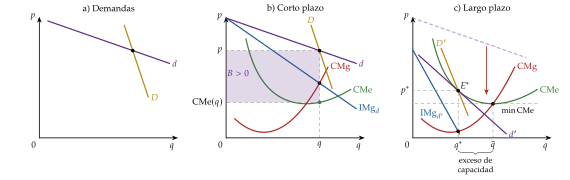
iii) Implicaciones
Teorema del exceso de capacidad: como la demanda tiene pendiente negativa, la tangencia con el coste medio en U está en su tramo decreciente. Cada empresa produce menos que la escala mínima eficiente, \(q^*<\bar{q}\), a un coste medio mayor que el mínimo: deja economías de escala sin explotar. Hay, en otras palabras, demasiadas empresas, cada una demasiado pequeña (Kaldor, 1935).
2 ineficiencias respecto a la competencia perfecta:
asignativa: \(p>\mathrm{CMg}\); en el margen, los consumidores valoran una unidad más por encima de lo que cuesta producirla;
productiva: \(p=\mathrm{CMe}>\min\mathrm{CMe}\); el mismo total se produciría más barato con menos empresas más grandes.
Pero hay que contar el valor de la variedad: con menos empresas en la escala eficiente habría menos variedades, y los consumidores las valoran. El exceso de capacidad es, en este sentido, el precio de la variedad. El juicio de bienestar depende de si el ahorro de costes compensa la variedad perdida, algo que Chamberlin no puede medir, porque no modeliza de dónde sale la demanda.
c) Valoración
Aportación: abre una estructura de mercado nueva entre los 2 polos, reconcilia la libre entrada con las economías de escala no agotadas (la inconsistencia de Sraffa) e introduce la diferenciación y los costes de venta como decisiones de la empresa. Comparte con la competencia perfecta el beneficio nulo a largo plazo, pero no su eficiencia: aquí el precio supera el coste marginal.
Críticas:
el grupo no está bien definido: no dice qué elasticidad cruzada hace falta para que 2 bienes estén en el mismo grupo, ni cuántas empresas separan la competencia monopolística del oligopolio (Stigler, 1949);
el supuesto de simetría es incoherente con la diferenciación: si los productos son distintos, ¿por qué iban a ser iguales sus demandas y sus costes? (Kaldor, 1935);
la miopía choca con la racionalidad: si los productos son sustitutivos cercanos, las empresas vigilan a sus rivales y aprenden de sus errores;
la diferenciación suele exigir costes hundidos (diseño, I+D, marca), que casan mal con la libre entrada;
la demanda percibida piensa en el consumidor final, para quien la diferenciación importa; para muchos compradores industriales, mejor informados, importa poco (Andrews, 1949).
Todas estas críticas piden explicitar de dónde sale la demanda de cada variedad: es lo que hacen Dixit y Stiglitz.
I.3. Modelo de Dixit y Stiglitz (1977)
Una vez vistas las intuiciones de Chamberlin, pasamos a su formalización moderna, que explicita las preferencias de las que sale la demanda de cada variedad.
a) Idea
Avinash Dixit y Joseph Stiglitz, en «Monopolistic Competition and Optimum Product Diversity» (Dixit y Stiglitz, 1977), reformulan a Chamberlin con rigor: derivan la demanda de cada variedad de las preferencias de un consumidor representativo con preferencia por la variedad. Así pueden calcular el equilibrio y, sobre todo, compararlo con el óptimo: ¿produce el mercado demasiadas variedades o demasiado pocas?
Es el modelo más usado de la competencia monopolística: con él la macroeconomía, el comercio y el crecimiento introducen el poder de mercado (extensiones).
b) Modelo
i) Supuestos
Los de Chamberlin (I.2): muchas empresas, simetría y libre entrada. Cada empresa produce una sola variedad, y variedades y empresas se cuentan con el mismo índice, \(i=1,\dots,n\).13
La economía tiene 2 sectores: el de las variedades del bien diferenciado y el resto, agregado en un numerario \(x_0\) de precio 1.
Un consumidor representativo con renta \(\overline{W}\) y preferencias Cobb-Douglas entre el numerario y un agregador \(y\) de las variedades, de tipo CES y simétrico [ver tema 3.A.11]:14 \[\tag{2} U(x_0,y)=x_0^{\,1-\alpha}\,y^{\alpha},\qquad y\equiv\Big[\sum_{i=1}^{n}x_i^{\rho}\Big]^{\frac{1}{\rho}},\qquad \rho\equiv\frac{\sigma-1}{\sigma},\quad \sigma>1,\quad 0<\alpha<1,\] donde \(x_i\) es el consumo de la variedad \(i\), \(\alpha\) la parte de la renta que se gasta en el grupo y \(\sigma\) la elasticidad de sustitución entre 2 variedades cualesquiera, la misma para todos los pares.15 Las preferencias son débilmente separables: la relación marginal de sustitución entre 2 variedades no depende del consumo de numerario.
Preferencia por la variedad: si el consumidor reparte una cantidad total \(X\) entre \(n\) variedades por igual, \(x_i=X/n\) y \(y=n^{\frac{1}{\sigma-1}}X\): con la misma cantidad total, más variedades dan más utilidad. Por eso consume todas las que existen. El efecto es mayor cuanto menor es \(\sigma\): con \(\sigma\to\infty\) las variedades son sustitutivos perfectos, el agregador es la suma \(\sum_ix_i\) y la variedad no vale nada; con \(\sigma\) cerca de 1, la preferencia por la variedad es muy intensa (gráfico 2).
\(\sigma>1\) por 2 razones:
que ninguna variedad sea imprescindible (las variedades son sustitutivas, no complementarias);
y, sobre todo, que la demanda de cada variedad sea elástica, sin lo que su monopolista no tendría un precio óptimo.16
Costes iguales para todas las variedades, con la tecnología de la caracterización (I.1): \(C(q_i)=\mathrm{CF}+c\,q_i\), sin economías de alcance.
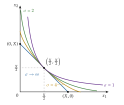
Fuente: elaboración propia a partir de Dixit y Stiglitz (1977).
ii) Desarrollo
El consumidor. Por la separabilidad, decide en 2 etapas (anexo B):
cómo reparte entre las variedades lo que gasta en el grupo, \(\alpha\overline{W}\): \[\begin{array}{rl}\displaystyle \max_{\{x_i\}} & \displaystyle \Big[\sum_{i=1}^{n}x_i^{\rho}\Big]^{1/\rho} \\ \text{s.a.} & \sum_{i=1}^{n}p_i\,x_i=\alpha\overline{W}\end{array}\]
cuánto gasta en el grupo y cuánto en el numerario: con la Cobb-Douglas, \(x_0=(1-\alpha)\overline{W}\) y \(P\,y=\alpha\overline{W}\), donde \(P\) es el índice de precios del grupo, el coste mínimo de una unidad del agregador.
El resultado es la demanda de cada variedad:
\[x_i=\frac{\alpha\overline{W}}{P}\left(\frac{p_i}{P}\right)^{-\sigma},\qquad P\equiv\Big[\sum_{j=1}^{n}p_j^{\,1-\sigma}\Big]^{\frac{1}{1-\sigma}}\tag{3}\]
La demanda de la variedad \(i\):
aumenta con el gasto en el grupo, \(\alpha\overline{W}\): el tamaño del mercado;
disminuye con su precio, \(p_i\), con elasticidad \(\sigma\);
aumenta con el índice de precios del grupo, \(P\) (es proporcional a \(P^{\sigma-1}\), y \(\sigma>1\)): si las demás variedades se encarecen, la \(i\) se abarata en términos relativos. El índice baja cuando entran variedades: con todos los precios iguales a \(p\), \(P=p\,n^{\frac{1}{1-\sigma}}\), y la entrada de una variedad nueva quita demanda a las que ya existían;
y \(\sigma\) decide lo sensible que es al precio relativo: no la desplaza en un sentido fijo (si la variedad es más barata que la media, un \(\sigma\) mayor le da más demanda; si es más cara, menos; con precios iguales, no la cambia), sino que la hace más elástica.
Con muchas variedades, el efecto de \(p_i\) sobre el índice \(P\) es despreciable, y la elasticidad de la demanda de cada variedad es \(\varepsilon_{x_i,p_i}=-\sigma\).17
La empresa. Cada empresa es monopolista de su variedad y, como hay muchas, toma \(P\) como dado: no tiene en cuenta el efecto de su precio sobre el índice ni sobre las demás. \[\begin{array}{rl}\displaystyle \max_{p_i} & \displaystyle B_i=(p_i-c)\,x_i(p_i)-\mathrm{CF}\end{array}\] La condición \(\mathrm{IMg}=\mathrm{CMg}\), \(p_i\,(1-1/\sigma)=c\), da la regla del margen: el índice de Lerner de cada variedad, igual para todas [ver tema 3.A.17]:
\[\mathcal{L}\equiv\frac{p^*-c}{p^*}=\frac{1}{|\varepsilon_{x_i,p_i}|}=\frac{1}{\sigma}\ \Longleftrightarrow\ p^*=\mu\,c,\qquad \mu\equiv\frac{\sigma}{\sigma-1}>1\tag{4}\]
El margen \(\mu\) es constante y aumenta con la preferencia por la variedad (baja con \(\sigma\)): cuanto peores sustitutivos son las variedades, menos elástica es la demanda de cada una y más puede cobrar su productor sobre el coste marginal.
La libre entrada. Entran variedades mientras den beneficios; en el equilibrio, \(B=0\), es decir, \(p^*=\mathrm{CMe}(q^*)\), o \((p^*-c)\,q^*=\mathrm{CF}\). Con la regla del margen, \(\mu c=c+\mathrm{CF}/q^*\), de donde \(c/(\sigma-1)=\mathrm{CF}/q^*\); y, como el gasto del grupo se reparte entre las \(n\) variedades, \(n\,p^*q^*=\alpha\overline{W}\): \[\tag{5} q^*=x^*=\frac{(\sigma-1)\,\mathrm{CF}}{c},\qquad n^*=\frac{\alpha\overline{W}}{p^*q^*}=\frac{\alpha\overline{W}}{\sigma\,\mathrm{CF}}.\] La producción de cada variedad aumenta con \(\mathrm{CF}/c\) (más economías de escala que aprovechar) y con \(\sigma\) (variedades más sustitutivas, menos margen: hace falta vender más para cubrir el coste fijo), y no depende del tamaño del mercado. El número de variedades aumenta con el tamaño del mercado, \(\alpha\overline{W}\), y disminuye con el coste fijo y con \(\sigma\).
Gráficamente (gráfico 3): la demanda de cada variedad es isoelástica y su ingreso marginal está por debajo; el coste marginal es la recta \(c\), y el coste medio, una curva decreciente que se acerca a ella. Por paneles:
con pocas variedades hay beneficios (panel a);
la entrada desplaza a la izquierda la demanda de cada variedad, con el precio fijo en \(\mu c\) (panel b),
hasta que es tangente al coste medio (panel c).18
El modelo no describe un proceso de entrada, sino que el equilibrio es directamente el del panel c.
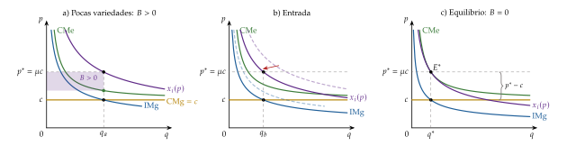
iii) Implicaciones
Positivas: precio por encima del coste marginal con beneficio nulo. El poder de mercado no está en el beneficio, sino en el margen sobre el coste marginal, que sirve para pagar el coste fijo: consiste en fijar el precio por encima del coste marginal, no del coste medio.
Normativas: como en Chamberlin, ineficiencia asignativa (\(p>\mathrm{CMg}\)) y productiva: con coste marginal constante el coste medio no tiene mínimo, pero quedan economías de escala sin agotar (\(\mathrm{CMe}>\mathrm{CMg}\): cada variedad se produciría más barata a mayor escala). Ahora, en cambio, se puede contar el valor de la variedad. Con esta especificación (CES y Cobb-Douglas):
el equilibrio coincide con el óptimo restringido, el mejor que puede conseguir un planificador que no puede subvencionar a las empresas, de modo que cada una tiene que cubrir sus costes (Dixit y Stiglitz, 1977);
el primer óptimo, con precios iguales al coste marginal y los costes fijos pagados con transferencias de suma fija, tendría la misma producción por variedad y más variedades (anexo C) [ver tema 3.A.22].
En general, con otras preferencias, el mercado puede ofrecer demasiadas variedades o demasiado pocas, según cuál de 2 fuerzas opuestas domine (Spence, 1976; Mankiw y Whinston, 1986):
el excedente no apropiable: quien lanza una variedad no cobra todo lo que vale para los consumidores; empuja a que haya pocas;
y el robo de clientes: parte de lo que gana se lo quita a las demás; empuja a que haya demasiadas.
La ciudad circular los hará visibles (II.3.4).
c) Extensiones
Comercio internacional: con el agregador de Dixit-Stiglitz:
Krugman (1979) explica el comercio intraindustrial entre países iguales: abrirse amplía el mercado y la variedad disponible;
Krugman (1980) añade los costes de transporte y el efecto del mercado doméstico;
y Melitz (2003), las empresas heterogéneas [ver tema 3.B.6].
Es también la base del modelo centro-periferia de la nueva geografía económica (Krugman, 1991). Un ejemplo: en 2025, España vendió a Alemania turismos por unos 6.700 millones de euros y le compró por unos 7.200 millones; casi todo ese comercio es de variedades del mismo producto (índice de Grubel-Lloyd de 0,97) (Eurostat, 2026a).
Macroeconomía: la competencia monopolística da a las empresas un precio que fijar y un margen; con costes de cambiar los precios, el dinero deja de ser neutral (Blanchard y Kiyotaki, 1987). Con rigideces de precios a la Calvo (1983) es el modelo canónico de la nueva economía keynesiana (Galí, 2015) [ver tema 3.A.7] y de sus versiones para la economía abierta [ver tema 3.A.32], con las que se estudia la coordinación de las políticas [ver tema 3.B.19].
Crecimiento: con variedades de bienes intermedios, la preferencia por la variedad se convierte en rendimientos crecientes y sostiene el crecimiento (Romer, 1990) [ver tema 3.A.44].
d) Evidencia empírica
Broda y Weinstein (2006) estiman las elasticidades de sustitución entre variedades de miles de productos importados por Estados Unidos y, con el índice de precios de Dixit-Stiglitz, miden el valor de las variedades nuevas. Entre 1972 y 2001:
el número de variedades importadas se triplicó;
el índice de precios convencional sobrestimó la subida de los precios de importación en 1,2 puntos al año;
y el aumento de la variedad vale un 2,6 % del PIB.
e) Valoración
Aportaciones: explicita la demanda y la sustitución entre variedades, da soluciones cerradas y permite juzgar la eficiencia del número de variedades. Es uno de los 20 artículos que un comité de la American Economic Review eligió como los mejores de sus cien primeros años (Arrow et al., 2011).
Críticas:
no dice en qué características compiten las empresas: el consumidor representativo da poca intuición sobre lo razonable de las preferencias, y no define el grupo de bienes diferenciados mejor que Chamberlin;
la elasticidad cruzada es la misma entre cualquier par de variedades (simetría), cuando la intuición dice que algunas son sustitutivos más cercanos que otras;19
el margen es constante, \(\mu=\sigma/(\sigma-1)\): no baja cuando el mercado crece o se abre al comercio. Krugman (1979) ya usa una elasticidad que crece con el consumo para que la competencia reduzca los márgenes.
La competencia es aquí global: cada variedad compite por igual con todas. Cuando la competencia es local, porque cada producto tiene unos pocos vecinos cercanos, y las empresas son pocas, hace falta el oligopolio con producto diferenciado.
Recapitulando: con muchas empresas y libre entrada, la diferenciación da un margen sobre el coste marginal, \(1/\sigma\), que solo paga los costes fijos; el resultado tiene exceso de capacidad y, a cambio, variedad. Pero hemos supuesto que nadie piensa en cómo reaccionarán los demás. Pasamos a los mercados con pocas empresas.
II. El oligopolio con productos diferenciados
En el cante: los supuestos en una frase, con la tabla como apoyo (1′); Bertrand y Cournot con producto diferenciado, con su gráfico de funciones de reacción (2′); Lancaster, muy breve, solo para justificar el enfoque de direcciones, y el mapa de las decisiones (tabla 3), que se escribe en la pizarra y se va rellenando (1′); los modelos espaciales, con el consumidor indiferente como pieza central (6′30″): el precio \(c+t\) y la salida a la paradoja de Bertrand, los 2 efectos de la localización y la diferenciación máxima, y la entrada excesiva en la ciudad circular; la diferenciación vertical con el segmento de valoraciones y el consumidor indiferente, la diferenciación máxima y la propiedad de finitud, con su contraste con la ciudad circular (3′30″); y la publicidad con la regla de Dorfman-Steiner, las visiones de la publicidad y la proliferación de marcas, de palabra (2′). Las derivaciones con localizaciones cualesquiera están en el anexo D, y el duopolio natural, en el anexo E.
Una vez estudiada la competencia monopolística, con muchas empresas y un consumidor que valora la variedad en sí, pasamos a mercados con pocas empresas que se saben interdependientes. Su conclusión anticipada:
la diferenciación es la salida a la paradoja de Bertrand;
las empresas quieren diferenciarse, en variedad y en calidad, para suavizar la competencia en precios;
con calidades, el número de empresas que caben está acotado aunque el mercado crezca;
la publicidad y las marcas sirven para crear diferenciación y para cerrar el paso a otros;
y el mercado no garantiza ni la diferenciación ni el número de empresas socialmente óptimos.
II.1. Caracterización del oligopolio con productos diferenciados
El oligopolio con productos diferenciados parte de la misma lista de supuestos que todas las estructuras de mercado (tabla 2) [ver tema 3.A.16] y levanta, además del supuesto 3, el 4 y, salvo en la ciudad circular, el 5.
| N.º | Supuesto | Qué significa |
|---|---|---|
| 1 | Agentes racionales | los consumidores maximizan su utilidad y las empresas, su beneficio |
| 2 | Información perfecta y simétrica | los consumidores conocen las características del producto y el precio, y las empresas, su tecnología y el precio; nadie sabe más que los demás |
| 3 | Producto homogéneo (sin sustitutivos cercanos) | los consumidores ven como sustitutivos perfectos las unidades de todas las empresas, de modo que solo les importa el precio Se levanta: producto diferenciado; cada empresa vende una variedad propia, distinta en sus características (diferenciación horizontal) o en su calidad (vertical) |
| 4 | Mercado atomizado: muchos compradores y vendedores (precio-aceptantes) | cada uno es pequeño respecto al mercado y sus decisiones individuales no mueven el precio: todos son precio-aceptantes, y el precio lo determinan las decisiones de todos juntos, no las de ninguno en particular Se levanta: hay pocos vendedores, que se saben interdependientes: lo que hace cada uno afecta al beneficio de los demás, y lo tienen en cuenta; los compradores siguen siendo muchos y precio-aceptantes |
| 5 | Libre entrada y salida (a largo plazo) | a largo plazo, si hay beneficios extraordinarios, entran empresas hasta agotarlos, y si hay pérdidas, salen Se levanta, salvo en la ciudad circular: hay barreras de entrada, que mantienen fijo el número de empresas; en la ciudad circular la entrada es libre |
Fuente: elaboración propia.
Supuesto a supuesto:
Se mantiene: agentes racionales. Además, la racionalidad de todos y la estructura del juego son conocimiento común [ver tema 3.A.14].
Se mantiene: información perfecta y simétrica. Cada empresa conoce la demanda y los costes de todas: son juegos con información completa.
Se levanta: producto diferenciado, ahora también en el espacio de las características (enfoque de direcciones, introducción) y en la calidad (II.4). Por ejemplo, un refresco normal, sin azúcar o sin cafeína.
Se levanta: pocos vendedores (2, por sencillez), que se saben interdependientes: lo que hace cada uno afecta al beneficio del otro, y lo tienen en cuenta [ver tema 3.A.19]. Los compradores siguen siendo muchos y precio-aceptantes.
Se levanta, salvo en la ciudad circular: hay barreras de entrada, que mantienen fijo el número de empresas [ver tema 3.A.15]. En la ciudad circular (II.3.4) la entrada es libre y el modelo vuelve a ser de competencia monopolística, ahora con direcciones; y la propiedad de finitud (II.4) muestra que, con calidades, aun con entrada libre caben solo unas pocas empresas.
Con pocas empresas aparece la interdependencia estratégica, que se analiza con la teoría de juegos no cooperativos [ver tema 3.A.14]:
en los juegos estáticos o simultáneos, en los que las empresas deciden a la vez y una sola vez (Bertrand y Cournot con producto diferenciado, la decisión de precios en la ciudad lineal), el concepto de solución es el equilibrio de Nash: ninguna empresa quiere cambiar su decisión, dada la de las demás;
en los juegos dinámicos secuenciales, en los que se decide por etapas y cada una se toma viendo lo decidido en las anteriores (los modelos en 2 etapas de localización, entrada y calidad), es el equilibrio de Nash perfecto en subjuegos, que se obtiene por inducción hacia atrás: primero se resuelve la última etapa, la de precios, y con su resultado se resuelve la anterior.20
Cada modelo del bloque estudia una de las decisiones de la empresa y deja fijas las demás: el mapa está en la tabla 3.
II.2. Modelos sin direcciones: Bertrand y Cournot con producto diferenciado
Empezamos por la decisión que se toma la última, el precio o la cantidad, con un número fijo de empresas y todavía sin direcciones.
a) Idea
Con producto homogéneo, 2 empresas que compiten en precios cobran el coste marginal y no ganan nada (paradoja de Bertrand), mientras que, si compiten en cantidades (Cournot), cobran por encima del coste marginal [ver tema 3.A.19]. ¿Qué cambia si los productos son distintos? El modelo de Singh y Vives (1984), con una demanda lineal que viene de Bowley (1924), lo responde con un solo parámetro de diferenciación.
b) Modelo
i) Supuestos
2 empresas, \(i,j=1,2\), con el mismo coste marginal constante \(c\) y sin costes fijos.
Un consumidor representativo con utilidad cuasilineal y cuadrática en las 2 variedades,21 \[U=x_0+\alpha\,(q_1+q_2)-\tfrac{1}{2}\big(\beta q_1^2+2\gamma\,q_1q_2+\beta q_2^2\big),\qquad \alpha>c,\quad 0\le\gamma<\beta,\] de la que salen las demandas inversas lineales, sin efecto renta [ver tema 3.A.16]: \[\tag{6} p_i=\alpha-\beta\,q_i-\gamma\,q_j\ \Longleftrightarrow\ q_i=\frac{\alpha(\beta-\gamma)-\beta\,p_i+\gamma\,p_j}{\beta^2-\gamma^2}.\]
\(\gamma/\beta\in[0,1)\) mide lo sustitutivas que son las variedades: con \(\gamma=0\) los mercados son independientes (cada empresa es un monopolio) y con \(\gamma\to\beta\) el producto es homogéneo.
Juego estático (simultáneo): las empresas eligen a la vez, y una sola vez, el precio (Bertrand) o la cantidad (Cournot).
ii) Desarrollo
Cournot: cada empresa elige \(q_i\) dada \(q_j\) y maximiza \((\alpha-\beta q_i-\gamma q_j-c)\,q_i\). Su función de reacción es decreciente: las cantidades son sustitutivos estratégicos (si la rival produce más, a mí me conviene producir menos): \[R_i(q_j)=\frac{\alpha-c-\gamma\,q_j}{2\beta}\ \Longrightarrow\ q^C=\frac{\alpha-c}{2\beta+\gamma},\qquad p^C=c+\frac{\beta\,(\alpha-c)}{2\beta+\gamma}.\]
Bertrand: cada empresa elige \(p_i\) dado \(p_j\), con la demanda directa. Su función de reacción es creciente: los precios son complementos estratégicos (si la rival sube el precio, a mí me conviene subirlo) (Bulow, Geanakoplos y Klemperer, 1985): \[R_i(p_j)=\frac{\alpha(\beta-\gamma)+\beta c+\gamma\,p_j}{2\beta}\ \Longrightarrow\ p^B=c+\frac{(\alpha-c)(\beta-\gamma)}{2\beta-\gamma}.\]
Gráficamente (gráfico 4):
a la izquierda, las funciones de reacción en cantidades, decrecientes, con el equilibrio de Cournot;
a la derecha, las de precios, crecientes, con el de Bertrand por encima del coste marginal.22
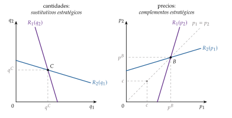
Fuente: elaboración propia a partir de Singh y Vives (1984) y Belleflamme y Peitz (2015, cap. 3).
iii) Implicaciones
La diferenciación resuelve la paradoja de Bertrand: \(p^B>c\) siempre que \(\gamma<\beta\). El margen crece con la diferenciación, al bajar \(\gamma\): con \(\gamma\to\beta\) (producto homogéneo), \(p^B\to c\); con \(\gamma=0\), \(p^B=(\alpha+c)/2\), el precio de monopolio.
Bertrand es más competitivo que Cournot: con \(\gamma>0\), \(p^B<p^C\), las cantidades son mayores y el excedente total también (Singh y Vives, 1984).23 La diferencia desaparece con \(\gamma=0\) y es máxima con producto homogéneo (\(p^C\to c+(\alpha-c)/3\) y \(p^B\to c\)).
Las empresas prefieren competir en cantidades: si antes de competir pueden comprometerse a fijar una cantidad o un precio (por ejemplo, con contratos), con bienes sustitutivos elegir la cantidad es estrategia dominante y el equilibrio es el de Cournot (Singh y Vives, 1984).
En los 2 casos, el índice de Lerner de cada empresa es la inversa de la elasticidad de su propia demanda en el equilibrio, \(\mathcal{L}_i=1/|\varepsilon_{q_i,p_i}|\), como en (4): la diferenciación reduce esa elasticidad y amplía el margen.
c) Evidencia empírica
Gasmi, Laffont y Vuong (1992) estiman, con datos de Coca-Cola y Pepsi de 1968 a 1986, un duopolio de bienes diferenciados que compite en precios y en publicidad, y contrastan qué tipo de conducta (competencia o colusión en cada variable) explica mejor los datos: es la aplicación de este modelo a la industria del enganche.
d) Valoración
Es sencillo y muestra lo esencial: la diferenciación da poder de mercado incluso compitiendo en precios. Pero el grado de sustitución \(\gamma\) es exógeno y simétrico: no dice de dónde sale ni por qué las empresas eligen diferenciarse más o menos. Para hacerlo endógeno, hay que definir las preferencias sobre las características: el enfoque de direcciones.
II.3. Modelos con direcciones: las decisiones de precios, de localización y de entrada
Una vez vista la competencia en precios con una diferenciación dada, pasamos a explicar de dónde sale la diferenciación:
primero, con la demanda de características que justifica el enfoque de direcciones;
después, con modelos que toman de una en una las decisiones de la empresa.
Las decisiones de una empresa se toman en un orden:
primero, si entra en el mercado;
después, qué variedad produce, es decir, dónde se sitúa en el espacio de las características;
luego, con qué calidad;
y, por último, a qué precio.
Cuanto más tarde se toma una decisión, más fácil es cambiarla: el precio se cambia de un día para otro; el producto o la calidad, no.
Por eso cada modelo fija las demás decisiones y estudia una, y los que tienen varias etapas se resuelven de la última a la primera, empezando siempre por el precio (Tirole, 1988, cap. 7). La tabla 3 es el mapa del bloque.
| Decisión | Modelo | Qué se toma como dado | Resultado clave |
|---|---|---|---|
| 1. Entrada (número de variedades) | Ciudad circular de Salop (II.3.4) | localización equidistante; el precio, después | \(n^*=\sqrt{t/\mathrm{CF}}\): el doble de las óptimas (entrada excesiva) |
| 2. Localización (qué variedad) | Ciudad lineal en 2 etapas (II.3.3) | empresas; el precio, después | diferenciación máxima: el efecto estratégico domina al de demanda |
| 3. Calidad | Shaked y Sutton (II.4) | empresas; el precio, después | diferenciación máxima de calidades; finitud (oligopolio natural) |
| 4. Precio | Ciudad lineal con localización dada (II.3.2) | empresas en los extremos | \(p^*=c+t\): salida a la paradoja de Bertrand |
| Otras: publicidad y marcas | Dorfman-Steiner; proliferación de marcas (II.5) | el poder de mercado; en las marcas, una instalada frente a un entrante | \(A/(p\,q)=\mathcal{L}\,\varepsilon_{q,A}\); las marcas ocupan los huecos y disuaden la entrada |
Fuente: elaboración propia a partir de Tirole (1988, cap. 7).
Mapa de las decisiones: cada modelo estudia una decisión y deja fijas las demás. En la pizarra, se escriben las 2 primeras columnas al empezar y se rellena la última con cada modelo. La exposición va de la decisión más fácil de cambiar, el precio, a las más duraderas: primero las de la diferenciación horizontal (precio, localización, entrada), después la calidad y, al final, la publicidad y las marcas. El precio con una diferenciación dada y sin direcciones es el de II.2.
II.3.1. Justificación: la demanda de características (Lancaster, 1966)
a) Idea
Para que la diferenciación sea endógena hay que decir en qué se diferencian los productos. Kelvin Lancaster, en un artículo de 1966 (Lancaster, 1966), lo hace con una idea sencilla: no demandamos bienes, sino las características que contienen (el sabor, la potencia, el diseño), que son las que dan utilidad.
b) Modelo
i) Supuestos
Cada bien combina características en proporciones fijas: una unidad del bien \(i\) da \(a_{ki}\) unidades de la característica \(k\) (la «tecnología del consumo»), y las características de varios bienes se suman.
La utilidad depende de las características, \(U(\vec{z})\), no de los bienes.
ii) Desarrollo
El consumidor elige la combinación de bienes que le da la mejor cesta de características que puede pagar (el modelo completo está en [ver tema 3.A.8]): \[\begin{array}{rl}\displaystyle \max_{\vec{x}} & \displaystyle U(\vec{z}) \\ \text{s.a.} & z_k=\sum_{i}a_{ki}\,x_i\quad (k=1,\dots,K) \\ & \vec{p}\cdot\vec{x}\leq\overline{W} \\ & \vec{x}\geq\vec{0}\end{array}\]
Gráficamente (gráfico 5), cada bien es un rayo en el espacio de las características, y la renta da sobre cada rayo el punto que se puede comprar; la frontera que los une es lo que el consumidor puede conseguir, y elige en ella el punto que más le gusta.
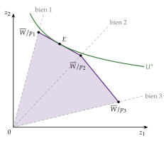
Fuente: elaboración propia a partir de Lancaster (1966).
iii) Implicaciones
El enfoque permite explicar 3 cosas que la teoría de bienes homogéneos no explicaba:
la fidelidad a la marca: si baja un poco el precio de otro bien, el consumidor puede no cambiar, porque la combinación de características que le da sigue siendo peor;
el desarrollo de productos nuevos: un bien con una combinación de características intermedia puede desplazar a los que había (estrategias de segmentación y de nicho);
la publicidad: hay que dar a conocer las características de cada producto (II.5).
Su consecuencia para este tema es el enfoque de direcciones: cada variedad es un punto del espacio de características y cada consumidor tiene una variedad ideal. Con una sola característica, el espacio es un segmento, y la distancia entre la variedad ideal y la que se compra es una pérdida de utilidad, como el coste de ir a una tienda lejana. Las variedades ya no compiten todas por igual, como en Dixit-Stiglitz: cada una compite sobre todo con sus vecinas (competencia local).24
c) Valoración
Da fundamento a la diferenciación, pero con muchas características el análisis se vuelve inmanejable. Los modelos espaciales que siguen se quedan con una sola característica, la «localización», y estudian cómo compiten las empresas en ella. Las aplicaciones de Lancaster a la diferenciación están en el anexo F.
II.3.2. Ciudad lineal de Hotelling (1929) con localización dada: la decisión de precios
a) Idea
Harold Hotelling (1929), en «Stability in Competition», estudia 2 tiendas en una calle recta que venden el mismo bien.25 Los consumidores prefieren la más cercana, y por eso quien sube un poco el precio no pierde a todos sus clientes. Es el primer modelo de diferenciación espacial, y la «calle» puede ser cualquier característica: el sabor, el horario de un vuelo o la ideología de un partido.26
Empezamos por la decisión que se toma la última, el precio, con las tiendas ya situadas en los extremos de la calle (Tirole, 1988, cap. 7).
b) Modelo
i) Supuestos
Un continuo de consumidores de masa 1, repartidos de modo uniforme en el segmento \([0,1]\) (la longitud 1 es una normalización); la posición \(x\) de cada uno es su variedad ideal (gráfico 6).
2 empresas: la 1, en el extremo izquierdo (0), y la 2, en el derecho (1), con el mismo coste marginal \(c\). Venden el mismo bien físico, que solo difiere en la característica que mide la localización.
Cada consumidor compra una unidad (demanda unitaria) a la empresa con la que obtiene más utilidad, \(v-p_i-t\,d^2\), donde \(v\) es su valoración bruta, lo bastante alta para que todos compren, \(d\) la distancia a la empresa y \(t>0\) el coste de transporte: la pérdida de utilidad por no consumir la variedad ideal.27 La demanda de cada empresa no es, por tanto, una cantidad por consumidor, sino el número de consumidores que le compran.
Compiten en precios, a la vez y una sola vez (Bertrand): es un juego estático.
Fuente: elaboración propia a partir de Hotelling (1929).
ii) Desarrollo
La pieza clave es el consumidor indiferente, \(\tilde{x}\), al que le da igual comprar a una empresa o a otra (gráfico 7): los que están a su izquierda compran a la 1, y los de su derecha, a la 2: \[\tag{7} p_1+t\,\tilde{x}^2=p_2+t\,(1-\tilde{x})^2\ \Longrightarrow\ x_1(p_1,p_2)=\tilde{x}=\frac{1}{2}+\frac{p_2-p_1}{2t},\qquad x_2(p_1,p_2)=1-\tilde{x}=\frac{1}{2}+\frac{p_1-p_2}{2t}.\] Con precios iguales, se reparten el mercado; quien cobra más pierde clientes, pero poco a poco, no de golpe.
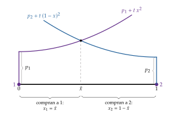
Fuente: elaboración propia a partir de Hotelling (1929) y Tirole (1988, cap. 7).
Cada empresa maximiza \(B_i=(p_i-c)\,x_i(p_i,p_j)\). Su función de reacción es creciente, como la de Bertrand con producto diferenciado (gráfico 4, a la derecha), y el equilibrio de Nash es simétrico: \[\tag{8} R_i(p_j)=\frac{p_j+c+t}{2}\ \Longrightarrow\ p_1^*=p_2^*=c+t,\qquad x_1^*=x_2^*=\frac{1}{2},\qquad B_1^*=B_2^*=\frac{t}{2}.\]
Gráficamente (gráfico 8): las 2 funciones de reacción, de pendiente \(1/2\) y que parten de \((c+t)/2\), se cortan sobre la diagonal en \((c+t,\,c+t)\), con un margen \(t\) sobre el coste marginal. Es el mismo gráfico que el de Bertrand con producto diferenciado.
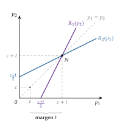
Fuente: elaboración propia a partir de Hotelling (1929) y Tirole (1988, cap. 7).
iii) Implicaciones
Salida a la paradoja de Bertrand: con los mismos supuestos que Bertrand salvo la diferenciación, las empresas cobran un margen \(t\) sobre el coste marginal y tienen beneficios. El margen mide lo distintos que los consumidores ven los productos: si \(t\to0\), los productos son homogéneos y se vuelve a \(p=c\).28
Es el mismo resultado que el de Bertrand con producto diferenciado (II.2), pero ahora la sustituibilidad entre las 2 variedades tiene un origen: la heterogeneidad de los gustos, que mide \(t\).
c) Valoración
Explica el margen a partir de los gustos, pero las localizaciones son exógenas: no dice si las empresas, pudiendo elegir, se parecerían o se diferenciarían. Es la pregunta del modelo siguiente.
II.3.3. Ciudad lineal con localización elegida: la decisión de localización
a) Idea
En la práctica, las empresas eligen su producto. ¿Se parecerán o se diferenciarán? Hotelling (1929) concluyó que las 2 tiendas acabarían juntas en el centro de la calle, y lo usó para explicar que los productos y los partidos se parezcan tanto: es el principio de diferenciación mínima. d’Aspremont, Gabszewicz y Thisse (1979) muestran que el razonamiento falla si las empresas también eligen precios: con costes de transporte lineales no hay equilibrio en precios cuando las tiendas están cerca, y con costes cuadráticos las empresas se van a los extremos.
b) Modelo
i) Supuestos
Los de II.3.2, con costes de transporte cuadráticos29 y un juego dinámico (secuencial) en 2 etapas, que se resuelve por inducción hacia atrás [ver tema 3.A.14]:
las empresas eligen a la vez sus localizaciones, \(0\le a\le b\le1\) (la 1 en \(a\) y la 2 en \(b\));
vistas las localizaciones, compiten en precios.
ii) Desarrollo
2.ª etapa: con el consumidor indiferente entre \(a\) y \(b\), \(p_1+t\,(\tilde{x}-a)^2=p_2+t\,(b-\tilde{x})^2\), \[x_1=\tilde{x}=\frac{a+b}{2}+\frac{p_2-p_1}{2t\,(b-a)},\qquad x_2=1-\tilde{x},\] y el equilibrio en precios es (anexo D) \[p_1^*(a,b)=c+\frac{t\,(b-a)(2+a+b)}{3},\qquad p_2^*(a,b)=c+\frac{t\,(b-a)(4-a-b)}{3}.\] Los márgenes son proporcionales a la distancia entre las empresas, \(b-a\): cuanto más se parecen los productos, más dura es la competencia en precios. Con \(a=0\) y \(b=1\) se vuelve a \(p^*=c+t\).
1.ª etapa: al acercarse al centro, la empresa 1 nota 2 efectos. Por el teorema de la envolvente, el cambio de su propio precio no cuenta, porque ya lo ha elegido de forma óptima en la 2.ª etapa: \[\frac{dB_1}{da}=(p_1^*-c)\Big[\underbrace{\frac{\partial x_1}{\partial a}}_{\text{efecto demanda }(+)}+\underbrace{\frac{\partial x_1}{\partial p_2}\,\frac{dp_2^*}{da}}_{\text{efecto estratégico }(-)}\Big]=(p_1^*-c)\,\frac{b-3a-2}{6\,(b-a)}<0\]
el efecto demanda: con los precios dados, acercarse a los clientes del centro le da más demanda;
el efecto estratégico: acercarse a la rival la obliga a bajar el precio, y eso le quita demanda.
Con costes cuadráticos domina el estratégico: la empresa 1 quiere irse a la izquierda, y la 2, por simetría, a la derecha (gráfico 9).
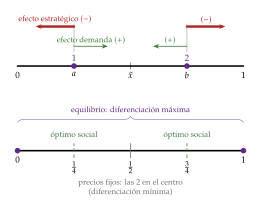
Fuente: elaboración propia a partir de d’Aspremont, Gabszewicz y Thisse (1979) y Tirole (1988, cap. 7).
iii) Implicaciones
Principio de diferenciación máxima: en el equilibrio, \(a=0\) y \(b=1\), con \(p^*=c+t\). Las empresas se alejan para suavizar la competencia en precios: diferenciarse es una estrategia para ganar poder de mercado.
Si los precios no se pueden elegir (por ejemplo, porque están regulados), solo queda el efecto demanda y las empresas se juntan en el centro: es el resultado de Hotelling, el de la diferenciación mínima.30
Bienestar: como todos compran una unidad, el precio es una transferencia y lo único que importa es el coste de transporte total. El planificador situaría las empresas en \(1/4\) y \(3/4\) (cada una en el centro de su mitad), con un coste de transporte de \(t/48\), frente al \(t/12\) del mercado: el mercado diferencia demasiado (anexo C).
c) Extensiones
Política: con los partidos en lugar de las tiendas y los votos en lugar de los precios, el efecto demanda lleva a los 2 partidos al centro, a la posición del votante mediano [ver tema 3.A.24].31
d) Valoración
El resultado es sensible a los supuestos: con costes lineales puede no haber equilibrio, y no siempre se observa la diferenciación máxima. Hay 3 razones por las que las empresas se agrupan (Tirole, 1988, cap. 7):
la demanda suele concentrarse en el centro;
la aglomeración tiene ventajas (los consumidores comparan mejor, y las empresas comparten proveedores y reducen sus costes de transporte);
y, si no se compite en precios, no hay razón para alejarse.
El número de empresas sigue siendo fijo. Para estudiar la entrada, hace falta un espacio sin extremos.
II.3.4. Ciudad circular de Salop (1979): la decisión de entrada
a) Idea
Steven Salop (1979), en «Monopolistic Competition with Outside Goods», pone a los consumidores en un círculo para estudiar cuántas empresas entran. Con libre entrada es, en rigor, un modelo de competencia monopolística, pero con competencia local: cada empresa compite solo con sus 2 vecinas. Por eso une los 2 bloques y responde la pregunta que Dixit-Stiglitz dejaba abierta: ¿entran demasiadas empresas o demasiado pocas?
b) Modelo
i) Supuestos
Consumidores de masa 1 repartidos de modo uniforme en un círculo de perímetro 1 (los horarios de los vuelos de un día, la programación de una cadena), con demanda unitaria y costes de transporte lineales, \(t\,d\). En un círculo no hay extremos ni centro, y ninguna posición es mejor que otra.32
Las empresas tienen un coste fijo de entrada \(\mathrm{CF}\) y un coste marginal \(c\). Sin el coste fijo entrarían infinitas y se llegaría a la competencia perfecta.
Juego dinámico (secuencial) en 2 etapas, que se resuelve por inducción hacia atrás:
entran \(n\) empresas, que se sitúan a la misma distancia, \(1/n\);
compiten en precios.
La localización simétrica es un supuesto, no un resultado.33
ii) Desarrollo
2.ª etapa: si las vecinas cobran \(p\), el consumidor indiferente entre la empresa \(i\) y una vecina está a la distancia \(\tilde{x}\) de \(i\), con \(p_i+t\,\tilde{x}=p+t\,(1/n-\tilde{x})\) (gráfico 10). Como tiene clientes a los 2 lados: \[x_i=2\tilde{x}=\frac{1}{n}+\frac{p-p_i}{t},\qquad \begin{array}{rl}\displaystyle \max_{p_i} & \displaystyle B_i=(p_i-c)\,x_i-\mathrm{CF}\end{array}\ \Longrightarrow\ p^*=c+\frac{t}{n},\qquad B^*=\frac{t}{n^2}-\mathrm{CF}.\] El margen, \(t/n\), baja con el número de empresas: cada una tiene a sus vecinas más cerca.
1.ª etapa: entran empresas hasta que el beneficio es nulo: \[\tag{9} n^*=\sqrt{\frac{t}{\mathrm{CF}}},\qquad p^*=c+\sqrt{t\,\mathrm{CF}}.\]
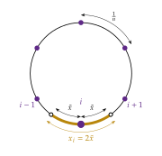
Fuente: elaboración propia a partir de Salop (1979) y Tirole (1988, cap. 7).
iii) Implicaciones
Positivas: precio por encima del coste marginal con beneficio nulo, como en Dixit-Stiglitz. Un coste fijo mayor reduce el número de empresas y sube el margen; un coste de transporte mayor (gustos más heterogéneos) aumenta los 2. Con \(\mathrm{CF}\to0\), \(n\to\infty\) y \(p\to c\): cada consumidor compra casi su variedad ideal y el mercado es casi competitivo.
Normativas: como todos compran una unidad, el margen es una transferencia y el planificador solo elige \(n\) para minimizar los costes fijos más los de transporte: \[\begin{array}{rl}\displaystyle \min_{n} & \displaystyle n\,\mathrm{CF}+\frac{t}{4n}\end{array}\ \Longrightarrow\ n^{\mathrm{o}}=\frac{1}{2}\sqrt{\frac{t}{\mathrm{CF}}}=\frac{n^*}{2}.\] El mercado produce el doble de variedades de las óptimas: hay entrada excesiva.34
La razón son los 2 efectos de cada entrada, que van en sentido contrario (Spence, 1976; Mankiw y Whinston, 1986):
el excedente no apropiable: quien entra acerca la variedad a muchos consumidores, pero no cobra todo ese valor; empuja hacia pocas variedades;
el robo de clientes (business stealing): buena parte de lo que gana quien entra se lo quita a las demás, y eso no es una ganancia social; empuja hacia demasiadas.
En el círculo, con demanda unitaria, domina el robo de clientes; en Dixit-Stiglitz, los 2 se compensan exactamente respecto al óptimo restringido (anexo C).
c) Valoración
Es el modelo canónico de la entrada con diferenciación localizada: sencillo y con un resultado de bienestar claro. Pero la localización simétrica es un supuesto y la demanda unitaria hace que el precio no distorsione el consumo; con entrada secuencial, las empresas instaladas pueden ocupar el espacio de productos para disuadir la entrada (II.5).
Conclusión de los modelos espaciales: las empresas se diferencian para aprovechar la heterogeneidad de los gustos, que mide el coste de transporte, y suavizar la competencia en precios; el mercado diferencia demasiado (Hotelling) y crea demasiadas variedades (Salop).
Recapitulando los modelos con direcciones, con pocas empresas:
la diferenciación da poder de mercado aun compitiendo en precios (decisión de precios);
las empresas la buscan a propósito (decisión de localización);
y el mercado tiende a diferenciar demasiado y a crear demasiadas variedades (decisión de entrada).
Pero hemos supuesto que nadie está de acuerdo en qué variedad es mejor. ¿Qué pasa cuando todos lo están?
II.4. Diferenciación vertical: la decisión de calidad (Shaked y Sutton, 1982 y 1983)
Una vez estudiada la diferenciación horizontal, en la que nadie se pone de acuerdo en qué variedad es mejor, pasamos a la vertical, en la que todos coinciden. Su conclusión anticipada: con calidades, las empresas también se diferencian al máximo para no competir en precios, pero ahora el número de empresas está acotado aunque el mercado crezca.
a) Idea
Cuando todos los consumidores prefieren más calidad a igualdad de precio y solo difieren en cuánto están dispuestos a pagar por ella, la diferenciación es vertical. Es la decisión de calidad (tabla 3), que se toma antes que la de precios. El duopolio de calidades con competencia en precios es de Gabszewicz y Thisse (1979) y Shaked y Sutton (1982); su consecuencia sobre el número de empresas, de Shaked y Sutton (1983). Lo presentamos como Tirole (1988, cap. 7).
b) Modelo
i) Supuestos
Cada consumidor compra como mucho una unidad y obtiene \(U=\theta\,s-p\), donde \(s\) es la calidad del bien y \(\theta\) su valoración de la calidad, repartida de modo uniforme en \([\underline{\theta},\overline{\theta}]\), con \(\overline{\theta}-\underline{\theta}=1\) (masa 1, por normalización). La heterogeneidad de \(\theta\) puede venir de los gustos o de la renta: quien tiene más renta valora menos cada euro y paga más por la calidad.35
2 empresas con el mismo coste marginal \(c\), que no depende de la calidad (la calidad cuesta en I+D, un coste fijo), eligen calidades \(s_{\mathrm{A}}>s_{\mathrm{B}}\) (alta y baja) en un intervalo \([\underline{s},\overline{s}]\).
Juego dinámico (secuencial) en 2 etapas, que se resuelve por inducción hacia atrás [ver tema 3.A.14]:
las empresas eligen a la vez la calidad;
vistas las calidades, compiten a la vez en precios.
El mercado está cubierto: todos los consumidores compran.
ii) Desarrollo
2.ª etapa: el consumidor indiferente, \(\tilde{\theta}\,s_{\mathrm{A}}-p_{\mathrm{A}}=\tilde{\theta}\,s_{\mathrm{B}}-p_{\mathrm{B}}\), está en \(\tilde{\theta}=(p_{\mathrm{A}}-p_{\mathrm{B}})/(s_{\mathrm{A}}-s_{\mathrm{B}})\): los que valoran más la calidad compran la alta, \(x_{\mathrm{A}}=\overline{\theta}-\tilde{\theta}\), y los demás la baja, \(x_{\mathrm{B}}=\tilde{\theta}-\underline{\theta}\) (gráfico 11). Con \(\Delta s\equiv s_{\mathrm{A}}-s_{\mathrm{B}}\), el equilibrio de Nash en precios es \[\tag{10} p_{\mathrm{A}}^*=c+\frac{2\overline{\theta}-\underline{\theta}}{3}\,\Delta s>p_{\mathrm{B}}^*=c+\frac{\overline{\theta}-2\underline{\theta}}{3}\,\Delta s,\qquad B_{\mathrm{A}}^*=\frac{(2\overline{\theta}-\underline{\theta})^2}{9}\,\Delta s>B_{\mathrm{B}}^*=\frac{(\overline{\theta}-2\underline{\theta})^2}{9}\,\Delta s,\] siempre que los consumidores sean lo bastante heterogéneos, \(\overline{\theta}>2\underline{\theta}\). Si no lo son, la empresa de calidad baja no puede vender nada a un precio que cubra su coste marginal: \(p_{\mathrm{B}}=c\), \(x_{\mathrm{B}}=0\), y la de calidad alta se queda con todo el mercado.36
Los márgenes son proporcionales a la distancia de calidades, \(\Delta s\): como en la ciudad lineal, cuanto más se parecen los productos, más dura es la competencia en precios.
1.ª etapa: los 2 beneficios crecen con \(\Delta s\), así que la empresa de calidad alta elige la máxima, \(\overline{s}\), y la de calidad baja, la mínima, \(\underline{s}\). Ninguna quiere la misma calidad que la otra, porque con productos iguales se vuelve a la paradoja de Bertrand.
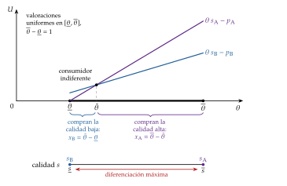
Fuente: elaboración propia a partir de Shaked y Sutton (1982) y Tirole (1988, cap. 7).
iii) Implicaciones
Diferenciación máxima de calidades, como en Hotelling y por la misma razón: suavizar la competencia en precios.
Pugna por el liderazgo: las 2 empresas son iguales, pero la de calidad alta gana más. Hay 2 equilibrios, según cuál elija la calidad alta, y, si eligen por turnos, la primera se la queda.
Propiedad de finitud: si mejorar la calidad cuesta sobre todo en costes fijos (I+D) y poco en costes variables, el número de empresas con cuota positiva está acotado, aunque el mercado crezca y los costes fijos sean muy pequeños (Shaked y Sutton, 1983). Las calidades más bajas se quedan sin clientes, porque las altas pueden bajar su precio lo bastante para atraerlos sin dejar de ganar: es el oligopolio natural. En este ejemplo, con \(2\underline{\theta}<\overline{\theta}<4\underline{\theta}\) caben exactamente 2 empresas, un duopolio natural, sea cual sea el tamaño del mercado (anexo E).
Es lo contrario que en la diferenciación horizontal, donde, al crecer el mercado o bajar el coste fijo, el número de variedades tiende a infinito y el precio al coste marginal (II.3.4). Con diferenciación vertical, el número de variedades depende de la heterogeneidad de los consumidores, no del tamaño del mercado.
c) Extensiones
Comercio internacional: Falvey (1981) explica el comercio intraindustrial de calidades distintas con la ventaja comparativa: el país abundante en capital exporta las calidades altas [ver tema 3.B.6].
Discriminación de precios: el monopolista que vende varias calidades las usa para que cada tipo de consumidor se autoseleccione (Mussa y Rosen, 1978) [ver tema 3.A.17].
d) Evidencia empírica
Sutton (1991) lleva la idea a los datos: en las industrias en las que la calidad se gana con costes hundidos endógenos (publicidad, I+D), la concentración no baja cuando el mercado crece, porque las empresas responden a un mercado mayor gastando más en calidad; en las industrias sin esos costes, la concentración sí baja con el tamaño del mercado.
e) Valoración
Explica por qué en muchos mercados conviven pocas marcas de calidades muy distintas, y por qué su número no crece con el mercado. Pero depende de supuestos fuertes: una sola dimensión de calidad, coste marginal que no depende de la calidad y competencia en precios; si la calidad encarece sobre todo los costes variables, o si las empresas compiten en cantidades, la propiedad de finitud puede no cumplirse.
Hasta ahora la diferenciación era real: las variedades eran distintas de verdad. Pero las empresas también pueden crearla, o protegerla, con decisiones que no cambian el producto.
II.5. Otras decisiones: publicidad y proliferación de marcas
Una vez estudiadas las decisiones sobre el propio producto (variedad, entrada y calidad), pasamos a 2 decisiones con las que las empresas crean o protegen la diferenciación sin cambiar el producto: cuánto gastar en publicidad y cuántas marcas lanzar. Su conclusión anticipada: se gasta más en publicidad cuanto más poder de mercado se tiene, y llenar el espacio de productos de marcas puede cerrar el paso a otros.
a) Idea
La diferenciación no siempre viene dada: las empresas la crean con la publicidad y la protegen ocupando el espacio de productos con muchas marcas. En España se invirtieron en publicidad 12.745 millones de euros en 2025, en torno al 0,75 % del PIB (InfoAdex, 2026; Eurostat, 2026b), y se pidieron 57.158 marcas nacionales, un 11,5 % más que el año anterior (Oficina Española de Patentes y Marcas, 2026). Chamberlin ya trató los costes de venta como una decisión de la empresa (anexo A); Dorfman y Steiner (1954) dan la regla para decidir cuánto gastar en publicidad.
b) Modelo de Dorfman y Steiner (1954)
i) Supuestos
ii) Desarrollo
La empresa resuelve \[\begin{array}{rl}\displaystyle \max_{p,\,A} & \displaystyle B=p\,q(p,A)-C\big(q(p,A)\big)-A\end{array}\]
Las condiciones de primer orden son 2:
la regla de Lerner, \((p-\mathrm{CMg})/p=1/|\varepsilon_{q,p}|\);
y que el último euro de publicidad rinda un euro de margen, \((p-\mathrm{CMg})\,\partial q/\partial A=1\).
Multiplicando la segunda por \(A/(p\,q)\) y usando la primera se llega a la regla de Dorfman-Steiner: \[\tag{11} \frac{A}{p\,q}=\frac{\varepsilon_{q,A}}{|\varepsilon_{q,p}|}=\mathcal{L}\,\varepsilon_{q,A}.\]
iii) Implicaciones
La empresa dedica a publicidad una parte de sus ventas igual al cociente entre la elasticidad de la demanda respecto a la publicidad y la elasticidad-precio: más cuanto más eficaz es la publicidad y cuanto más poder de mercado tiene.
En competencia perfecta (\(\mathcal{L}=0\)) no hay publicidad: solo anuncia quien tiene un producto propio que vender. La publicidad y la diferenciación van juntas.
c) Extensiones
¿Por qué funciona la publicidad? Hay 3 visiones, con implicaciones distintas para el bienestar (Bagwell, 2007):
informativa: da a conocer la existencia, el precio y las características de los productos y reduce los costes de búsqueda; hace la demanda más elástica y aumenta la competencia (Nelson, 1974);
persuasiva: cambia los gustos y crea fidelidad a la marca, una diferenciación que no está en el producto; hace la demanda menos elástica y puede ser una barrera de entrada;
complementaria: la publicidad entra en la utilidad junto al bien (el prestigio de una marca anunciada), sin cambiar las preferencias (Becker y Murphy, 1993).
Publicidad como señal. Según cuándo se conoce la calidad, hay bienes:
de búsqueda, antes de comprar;
de experiencia, después (Nelson, 1970);
y de confianza, ni siquiera después (Darby y Karni, 1973).
Se anuncian más los de experiencia, lo que no casa con la visión puramente informativa; pero incluso un anuncio sin información puede ser una señal: solo a la empresa de calidad alta le compensa gastar mucho, porque espera clientes que vuelvan a comprar (Nelson, 1974; Milgrom y Roberts, 1986) [ver tema 3.A.13].
Proliferación de marcas. Una empresa instalada puede lanzar muchas variedades para ocupar todos los nichos rentables del espacio de productos: en un círculo como el de Salop (II.3.4), si las marcas están lo bastante juntas, a un entrante no le queda hueco en el que cubrir su coste fijo. Es una barrera de entrada estratégica [ver tema 3.A.15]. La estrategia solo disuade si es creíble: si retirar una marca cuesta poco, la instalada la retiraría ante la entrada en lugar de competir con el entrante (Judd, 1985).
d) Evidencia empírica
Schmalensee (1978) usa la proliferación de marcas para explicar la industria de los cereales de desayuno en Estados Unidos, en la que, entre 1950 y 1972, los 6 mayores fabricantes lanzaron más de 80 marcas sin que entrara con éxito ninguna empresa nueva (Schmalensee, 1977, 1978). En abril de 1972, la Comisión Federal de Comercio de Estados Unidos acusó a Kellogg, General Mills, General Foods y Quaker Oats de levantar barreras de entrada con la proliferación de marcas; el caso se desestimó en 1981 (Schmalensee, 1977, 1978). Muestra el problema de la defensa de la competencia: la misma variedad que valoran los consumidores puede servir para cerrar el mercado [ver tema 3.B.39].
e) Valoración
La regla de Dorfman-Steiner es sencilla y contrastable, pero no dice si la publicidad es buena para el bienestar: eso depende de qué visión sea la correcta en cada mercado, y la evidencia no permite elegir una con carácter general (Bagwell, 2007).
Debajo del índice de Lerner de cada variedad, \(\mathcal{L}=1/\sigma\) (4), queda la lista completa de márgenes:
\(p^B-c\), que crece al bajar \(\gamma\), sin direcciones (II.2);
\(t\) en la ciudad lineal (8) y \(t/n\) en la circular (II.3.4);
proporcional a la distancia de calidades \(\Delta s\) con diferenciación vertical (10);
y un gasto en publicidad proporcional al propio margen, \(A/(p\,q)=\mathcal{L}\,\varepsilon_{q,A}\) (11).
En todos los casos, cuanto más distintas son las variedades, mayor es el margen.
Recapitulando el bloque, con pocas empresas:
la diferenciación da un margen aun compitiendo en precios;
las empresas se diferencian al máximo, en variedad y en calidad, para suavizar esa competencia;
con libre entrada y direcciones entran demasiadas, y con calidades caben pocas aunque el mercado crezca;
y la publicidad y las marcas son formas de crear diferenciación o de cerrar el paso a otros.
Cada decisión de la tabla 3 tiene ya su resultado.
Conclusión
Recapitulación (ideas clave):
En conclusión, cuando el producto deja de ser homogéneo, cada empresa tiene una demanda con pendiente negativa y cobra por encima del coste marginal un margen que depende de lo distintas que sean las variedades: \(1/\sigma\) con preferencia por la variedad (I), el coste de transporte con direcciones (II.3) y la distancia de calidades en la diferenciación vertical (II.4).
Con libre entrada el beneficio desaparece, pero no la ineficiencia: exceso de capacidad (Chamberlin, Dixit-Stiglitz) o exceso de entrada (Salop). Con pocas empresas, se diferencian al máximo para suavizar la competencia en precios (Hotelling, Shaked-Sutton), y la publicidad y las marcas crean y protegen esa diferenciación (II.5).
El juicio de bienestar es ambiguo: el margen y la escala ineficiente frente al valor de la variedad. Con preferencias CES el equilibrio coincide con el óptimo restringido; en general, el mercado puede ofrecer demasiadas o demasiado pocas variedades, según domine el robo de clientes o el excedente no apropiable (anexo C).
Relevancia:
la preferencia por la variedad es la forma en que la nueva teoría del comercio [ver tema 3.B.6], la nueva economía keynesiana [ver tema 3.A.7] y el crecimiento por aumento de variedades [ver tema 3.A.44] introducen el poder de mercado;
la competencia espacial, la base de la competencia electoral [ver tema 3.A.24];
y todos estos modelos, la base para delimitar mercados y juzgar estrategias en la defensa de la competencia [ver tema 3.B.39].
Extensiones y relación con otras partes del temario:
el oligopolio con producto homogéneo y la colusión, más difícil de sostener con productos diferenciados (anexo I) [ver tema 3.A.19];
las herramientas de la teoría de juegos [ver tema 3.A.14];
las barreras de entrada [ver tema 3.A.15];
la definición del mercado relevante [ver tema 3.A.20];
la publicidad como señal [ver tema 3.A.13];
la variedad óptima como problema de segundo óptimo [ver tema 3.A.22];
y la estimación de demandas de productos diferenciados con modelos de elección discreta (anexo H).
Opinión: el resultado depende menos de cómo se modelice la demanda que de lo local que sea la competencia. Cuando cada producto compite por igual con todos, como en Dixit-Stiglitz, la variedad compensa buena parte de la ineficiencia; cuando compite con unos pocos vecinos, las empresas pueden proteger su nicho y el resultado se aleja más del óptimo. Por eso la política de la competencia no debe castigar la diferenciación en sí, que es lo que piden los consumidores, sino las estrategias que la usan para cerrar el paso a otros.
Idea final: para gustos, los colores, y de esa diversidad de gustos nace el poder de mercado. Las empresas no venden todas lo mismo porque, si los gustos difieren, diferenciarse es la mejor manera de no competir en precios; pagamos la variedad con un margen sobre el coste, y el mercado no da por sí solo la variedad justa: unas veces se queda corto, porque quien crea una variedad no cobra todo lo que vale, y otras se pasa, porque parte de lo que gana se lo quita a los demás. Hay colores para todos los gustos, pero no necesariamente los que la sociedad elegiría.
A. Anexo: el modelo de Chamberlin con más detalle
Costes de venta. Chamberlin (1933) distingue los costes de producción de los costes de venta: los que desplazan la demanda de la empresa y la hacen menos elástica (publicidad, vendedores, presentación del producto). Les supone también forma de U, y la empresa decide a la vez el precio, el producto y el gasto en ventas. Es la primera vez que la teoría trata la publicidad como una variable que decide la empresa; su desarrollo moderno es la regla de Dorfman-Steiner (II.5).
Proceso de ajuste a largo plazo, paso a paso (Koutsoyiannis, 1979, 209). Lo que lo alarga es la miopía: cada empresa decide mirando su demanda percibida \(d\), como si las demás no fueran a reaccionar, pero vende sobre la efectiva \(D\), porque todas hacen lo mismo (gráfico 12).
Punto de partida: equilibrio a corto plazo con beneficios (punto A). Cada empresa iguala el ingreso marginal de \(d\) con su coste marginal, y el precio está por encima del coste medio. Mientras nadie entre, no tiene motivo para cambiar el precio.
Entrada. Los beneficios extraordinarios atraen variedades nuevas. La demanda total del grupo no cambia, pero se reparte entre más empresas: la demanda efectiva de cada una se desplaza a la izquierda, de \(D\) a \(D'\), y con el mismo precio vende menos (punto B). Su demanda percibida baja con ella.
Guerra de precios por miopía. Para recuperar los beneficios, cada empresa baja el precio: cree, por su demanda percibida, que ganará los clientes de las demás. Pero todas razonan igual y bajan a la vez, de modo que nadie gana clientes a costa de nadie: cada una vende sobre \(D'\) mucho menos de lo que esperaba, y su demanda percibida se desliza hacia abajo a lo largo de \(D'\).
Pérdidas y salida. Con el precio más bajo, las empresas ya no cubren el coste medio y tienen pérdidas. Algunas salen; las que se quedan se reparten su clientela, y la demanda efectiva de cada una vuelve hacia la derecha. Entradas, bajadas de precio y salidas se repiten, cada vez con menos amplitud, hasta llegar a \(E^*\), con la demanda percibida \(d^*\) y la efectiva \(D^*\), en el que no hay beneficios ni pérdidas y no entra ni sale nadie.38
Las 3 condiciones del equilibrio en \(E^*\):
la demanda percibida corta a la efectiva: \(d^*\) pasa por un punto de \(D^*\), y lo que la empresa cree que vende es lo que vende;
\(d^*\) es tangente a la curva de coste medio a largo plazo, \(\mathrm{CMe}_{\mathrm{LP}}\): \(p^*=\mathrm{CMe}_{\mathrm{LP}}(q^*)\) y el beneficio es nulo;
el ingreso marginal de \(d^*\) es igual al coste marginal a largo plazo, \(\mathrm{IMg}_{d^*}(q^*)=\mathrm{CMg}_{\mathrm{LP}}(q^*)\): dadas sus creencias, la empresa no quiere cambiar el precio. No es una condición independiente: se sigue de la tangencia (nota de I.2).
Estabilidad. El equilibrio es estable en los 2 sentidos que mueven el proceso:
la demanda percibida es estable: coincide con la efectiva en el punto elegido y en él \(\mathrm{IMg}=\mathrm{CMg}\), así que ninguna empresa quiere mover el precio ni descubre que se equivocaba;
la demanda efectiva es estable: con beneficio nulo no entra ni sale nadie, y el número de empresas, que es lo que desplaza \(D\), no cambia.
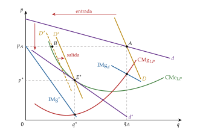
Teorema del exceso de capacidad: en el equilibrio a largo plazo, \(p=\mathrm{CMe}>\min\mathrm{CMe}>\mathrm{CMg}\) (Kaldor, 1935). Que el precio supere el mínimo del coste medio se debe a que la tangencia está en el tramo decreciente; que el mínimo del coste medio supere el coste marginal, a que, en ese tramo, el coste marginal está por debajo del medio.
La demanda de cuota de mercado. En la presentación de Krugman, Obstfeld y Melitz (2018, cap. 8), la empresa \(i\) vende \(q_i=S\left[\frac{1}{n}-b\,(p_i-\bar{p})\right]\), con \(S\) las ventas de la industria, \(\bar{p}\) el precio medio de las demás y \(b>0\) la sensibilidad de su cuota a la diferencia de precios. Con precios iguales vende \(S/n\): más empresas, menos ventas para cada una (la entrada desplaza \(D\)). Si mueve su precio sola, sus ventas cambian según la pendiente \(-Sb\): es la demanda percibida \(d\), más elástica.
B. Anexo: derivaciones del modelo de Dixit-Stiglitz
B.1. Primera etapa: el reparto entre variedades
Con un gasto \(E\) en el grupo, el consumidor resuelve \[\begin{array}{rl}\displaystyle \max_{\{x_i\}} & \displaystyle y=\Big[\sum_{i=1}^{n}x_i^{\rho}\Big]^{1/\rho} \\ \text{s.a.} & \sum_{i=1}^{n}p_i\,x_i=E\end{array}\] Con el multiplicador \(\lambda\), la condición de primer orden para \(x_i\) es \(y^{1-\rho}\,x_i^{\rho-1}=\lambda\,p_i\). Dividiendo las de \(i\) y \(j\): \(x_i/x_j=(p_i/p_j)^{-1/(1-\rho)}=(p_i/p_j)^{-\sigma}\), porque \(1/(1-\rho)=\sigma\).
Sustituyendo \(x_j=x_i\,(p_i/p_j)^{\sigma}\) en la restricción, \(x_i\,p_i^{\sigma}\sum_jp_j^{1-\sigma}=E\), de donde \[x_i=E\,\frac{p_i^{-\sigma}}{\sum_jp_j^{1-\sigma}}=\frac{E}{P}\left(\frac{p_i}{P}\right)^{-\sigma},\qquad P\equiv\Big[\sum_{j=1}^{n}p_j^{\,1-\sigma}\Big]^{\frac{1}{1-\sigma}}.\]
Sustituyendo en el agregador, \(\sum_jx_j^{\rho}=(E\,P^{\sigma-1})^{\rho}\,P^{1-\sigma}\) (porque \(\sigma\rho=\sigma-1\)), y \(y=E\,P^{\sigma-1}\,P^{(1-\sigma)/\rho}=E/P\): el gasto mínimo para conseguir una unidad de \(y\) es \(P\), el índice de precios del grupo.∎
B.2. Segunda etapa: el numerario frente al grupo
Como \(\sum_ip_ix_i=P\,y\), el consumidor resuelve \[\begin{array}{rl}\displaystyle \max_{x_0,\,y} & \displaystyle x_0^{\,1-\alpha}\,y^{\alpha} \\ \text{s.a.} & x_0+P\,y=\overline{W}\end{array}\] La igualdad de la relación marginal de sustitución con el precio relativo, \(\frac{\alpha\,x_0}{(1-\alpha)\,y}=P\), y la restricción dan \(x_0=(1-\alpha)\overline{W}\) y \(P\,y=\alpha\overline{W}\); así que \(E=\alpha\overline{W}\) y se llega a la demanda (3).∎
Resolver el problema de una vez, con todas las variedades a la vez, da lo mismo: la separabilidad débil y la homogeneidad de grado 1 del agregador garantizan que el presupuesto en 2 etapas es exacto (Foltyn, 2012).
B.3. La empresa y la libre entrada
Con \(\varepsilon_{x_i,p_i}=-\sigma\), el ingreso marginal es \(\mathrm{IMg}=p_i\,(1-1/\sigma)\), y \(\mathrm{IMg}=c\) da \(p^*=\frac{\sigma}{\sigma-1}\,c\). La condición de segundo orden se cumple porque \(\sigma>1\): el beneficio \((p_i-c)\,k\,p_i^{-\sigma}\), con \(k\) constante, es creciente hasta \(p^*\) y decreciente después.
Con \(B=0\), \((p^*-c)\,q^*=\mathrm{CF}\) y \(p^*-c=c/(\sigma-1)\) dan \(q^*=(\sigma-1)\,\mathrm{CF}/c\); el gasto en el grupo es \(n\,p^*q^*=n\,\sigma\,\mathrm{CF}=\alpha\overline{W}\), así que \(n^*=\alpha\overline{W}/(\sigma\,\mathrm{CF})\).∎
Con todos los precios iguales, \(P=p\,n^{1/(1-\sigma)}\): el índice cae al entrar variedades, más deprisa cuanto menor es \(\sigma\), y con un gasto dado la utilidad sube (Foltyn, 2012).
C. Anexo: bienestar y número de variedades
Los 2 efectos de la entrada (Spence, 1976; Mankiw y Whinston, 1986). Una variedad nueva:
da a los consumidores un excedente que su productor no cobra (excedente no apropiable: tiende a dar pocas variedades);
y quita ventas a las demás (robo de clientes: tiende a dar demasiadas).
Con producto homogéneo y competencia en cantidades solo opera el segundo, y la libre entrada da demasiadas empresas (Mankiw y Whinston, 1986); con producto diferenciado, depende del modelo.
Dixit-Stiglitz con CES: el equilibrio de mercado coincide con el óptimo restringido, el que elegiría un planificador que no puede subvencionar a las empresas, de modo que cada una tiene que cubrir sus costes (Dixit y Stiglitz, 1977). Respecto a ese óptimo, los 2 efectos se compensan exactamente. Con elasticidades de sustitución variables, el sesgo puede ir en los 2 sentidos.
El primer óptimo, con subvenciones de suma fija para los costes fijos. Con la especificación del tema y variedades simétricas, \(y=n^{1/\rho}x\), y el planificador resuelve (con la utilidad en logaritmos, una transformación monótona) \[\begin{array}{rl}\displaystyle \max_{x_0,\,x,\,n} & \displaystyle (1-\alpha)\ln x_0+\alpha\Big(\tfrac{1}{\rho}\ln n+\ln x\Big) \\ \text{s.a.} & x_0+n\,(\mathrm{CF}+c\,x)=\overline{W}\end{array}\] Las condiciones de primer orden respecto a \(x\) y a \(n\), \(\alpha/x=\lambda\,n\,c\) y \(\alpha/(\rho\,n)=\lambda\,(\mathrm{CF}+c\,x)\), dan \(\rho\,(\mathrm{CF}+c\,x)=c\,x\), es decir, \(x^{\mathrm{o}}=(\sigma-1)\,\mathrm{CF}/c=q^*\): la misma escala que el mercado. Con la de \(x_0\), \((1-\alpha)/x_0=\lambda\), el planificador dedica al grupo la parte \(\frac{\alpha/\rho}{(1-\alpha)+\alpha/\rho}\) de los recursos, más que la \(\alpha\) del mercado, y \[\frac{n^{\mathrm{o}}}{n^*}=\frac{1}{\rho\,(1-\alpha)+\alpha}>1,\] porque \(\rho<1\): el primer óptimo tiene más variedades, cada una vendida a su coste marginal.∎
Ciudad lineal: como todos compran una unidad, el bienestar solo depende del coste de transporte total. Con las empresas en los extremos, los consumidores recorren hasta \(1/2\): \(2\int_0^{1/2}t\,x^2\,dx=t/12\). Con las empresas en \(1/4\) y \(3/4\), cada consumidor está como mucho a \(1/4\) de la suya: \(4\int_0^{1/4}t\,x^2\,dx=t/48\). El mercado diferencia demasiado (II.3.3).∎
Ciudad circular: con demanda unitaria y competencia local domina el robo de clientes, y entran el doble de empresas de las óptimas (II.3.4).
Cuántas variedades debe haber es un problema de segundo óptimo cuando el planificador no puede subvencionar a las empresas [ver tema 3.A.22].
D. Anexo: la ciudad lineal con costes lineales y con localizaciones cualesquiera
Costes lineales: por qué la demanda es discontinua (gráfico 13). Con las empresas en \(a<b\) y costes lineales, lo que paga un consumidor situado en \(x\) por comprar a la empresa 1 es \(p_1+t\,|x-a|\): en el gráfico, una V con el vértice en \(a\), a la altura \(p_1\); y lo mismo para la empresa 2, con el vértice en \(b\). Cada consumidor compra a la empresa cuya V está más abajo en su posición.
Caso normal (panel a). Si los precios no son muy distintos, \(|p_1-p_2|<t\,(b-a)\), las 2 V se cortan entre \(a\) y \(b\), en el consumidor indiferente: de \(p_1+t\,(\tilde{x}-a)=p_2+t\,(b-\tilde{x})\), \[\tilde{x}=\frac{a+b}{2}+\frac{p_2-p_1}{2t}.\] Cada empresa tiene además un mercado cautivo: los consumidores a la izquierda de \(a\) compran a la 1 y los de la derecha de \(b\), a la 2, porque para todos ellos la diferencia de distancias a las 2 empresas es la misma, \(b-a\), y eligen igual que el consumidor situado en la empresa más cercana.
Una empresa se queda con todo el mercado (panel b). Si la empresa 1 baja su precio hasta \(p_1<p_2-t\,(b-a)\), su V queda por debajo de la de la 2 incluso en \(b\), la localización de la rival: comprarle a la 1 es mejor para todos, también para el mercado cautivo de la 2. Deja de haber consumidor indiferente, y la demanda de la 1 salta de golpe de \(b\) (el consumidor indiferente llega a \(b\) cuando \(p_1=p_2-t\,(b-a)\)) a 1: gana de una vez los \(1-b\) consumidores del mercado cautivo de la rival.
La demanda es, por tanto, discontinua, el beneficio deja de ser cuasicóncavo y, si las empresas están cerca, no hay equilibrio en precios (d’Aspremont, Gabszewicz y Thisse, 1979): a cada una puede convenirle bajar el precio para quedarse con todo el mercado, y a la otra, responder igual. Por eso los modelos con localización elegida suponen costes cuadráticos: con ellos, el consumidor indiferente se mueve de forma continua al cambiar los precios, y la demanda no salta. El panel c del gráfico 13 lo resume: la demanda de la empresa 1 es nula si su precio es muy alto, continua mientras hay consumidor indiferente y da un salto cuando se queda con todo el mercado. Con las empresas en los extremos (\(a=0\), \(b=1\)) no hay mercados cautivos, la demanda no salta y los costes lineales dan el mismo equilibrio que los cuadráticos (II.3.2).
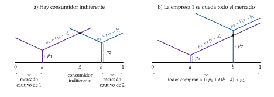
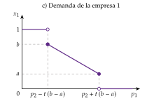
Fuente: elaboración propia a partir de d’Aspremont, Gabszewicz y Thisse (1979).
Consumidor indiferente con costes cuadráticos: de \(p_1+t\,(\tilde{x}-a)^2=p_2+t\,(b-\tilde{x})^2\) sale \(2t\,\tilde{x}\,(b-a)=p_2-p_1+t\,(b^2-a^2)\), es decir, \[x_1=\tilde{x}=\frac{a+b}{2}+\frac{p_2-p_1}{2t\,(b-a)},\qquad x_2=1-\tilde{x}.\]
Precios de la 2.ª etapa. Las condiciones de primer orden de las empresas 1 y 2 son \[\frac{a+b}{2}+\frac{p_2-2p_1+c}{2t\,(b-a)}=0,\qquad 1-\frac{a+b}{2}+\frac{p_1-2p_2+c}{2t\,(b-a)}=0,\] y su solución, \(p_1^*=c+\frac{t\,(b-a)(2+a+b)}{3}\) y \(p_2^*=c+\frac{t\,(b-a)(4-a-b)}{3}\).∎
1.ª etapa: efecto demanda y efecto estratégico. Por el teorema de la envolvente, \(\partial B_1/\partial p_1=0\) en la 2.ª etapa, así que el efecto de \(a\) a través del propio precio desaparece y queda \[\frac{dB_1}{da}=(p_1^*-c)\Big[\frac{\partial x_1}{\partial a}+\frac{\partial x_1}{\partial p_2}\,\frac{dp_2^*}{da}\Big].\]
Efecto demanda: \(\frac{\partial x_1}{\partial a}=\frac{1}{2}+\frac{p_2^*-p_1^*}{2t\,(b-a)^2}=\frac{b-5a+2}{6\,(b-a)}>0\);
efecto estratégico: \(\frac{\partial x_1}{\partial p_2}\,\frac{dp_2^*}{da}=\frac{1}{2t\,(b-a)}\cdot\frac{t\,(2a-4)}{3}=\frac{2a-4}{6\,(b-a)}<0\).
La suma es \(\frac{b-3a-2}{6\,(b-a)}<0\) para todo \(0\le a\le b\le1\): la empresa 1 siempre quiere alejarse, hasta \(a=0\), y, por simetría, la 2 hasta \(b=1\). Para precios dados, las 2 querrían acercarse al centro; es la reacción del precio de la rival lo que las separa: el efecto estratégico domina al de demanda.∎
E. Anexo: propiedad de finitud y duopolio natural en la diferenciación vertical
Cuándo tiene cuota la calidad baja. Con el modelo de II.4, la empresa de calidad baja vende \(x_{\mathrm{B}}=\tilde{\theta}-\underline{\theta}=(\overline{\theta}-2\underline{\theta})/3\), positiva si y solo si \(\overline{\theta}>2\underline{\theta}\): hace falta bastante heterogeneidad para que quepan 2 calidades.
Por qué no cabe una tercera. Con calidades que solo cuestan en costes fijos, la primera empresa elige la máxima; una segunda con la misma calidad haría caer el precio hasta el coste marginal y no cubriría su coste fijo, así que elige una menor. Una tercera, de calidad aún más baja, solo tiene clientes si su precio está por debajo de lo que las de arriba pueden igualar sin dejar de ganar; si la heterogeneidad no es muy grande, las 2 de arriba bajan su precio lo bastante para dejarla sin clientes. Con valoraciones uniformes, la tercera empresa no tiene cuota cuando \(\overline{\theta}<4\underline{\theta}\), de modo que con \(2\underline{\theta}<\overline{\theta}<4\underline{\theta}\) caben exactamente 2: un duopolio natural, sea cual sea el tamaño del mercado y por pequeño que sea el coste fijo (Shaked y Sutton, 1982).
La propiedad de finitud en general: si todo consumidor prefiere la calidad máxima cuando se le ofrece a su coste marginal (la mejora de la calidad cuesta sobre todo en I+D, no en costes variables), el número de empresas con cuota positiva está acotado, por grande que sea el mercado (Shaked y Sutton, 1983). Es el oligopolio natural.
Entrada secuencial: si las empresas entran por turnos, la primera elige la calidad alta y la segunda puede elegir una calidad que deje sin hueco a una tercera, con lo que el número de empresas queda fijado por las decisiones de calidad de las primeras.
F. Anexo: la demanda de características aplicada a la diferenciación
El modelo completo de Lancaster (1966), con la frontera de eficiencia y el óptimo, está en [ver tema 3.A.8]. En el gráfico 5, cada bien es un rayo en el espacio de las características y la renta da el punto de cada rayo que el consumidor puede comprar; la frontera de eficiencia une esos puntos. Quien prefiere sobre todo una característica elige un punto de la frontera cercano a su eje y consume solo 1 o 2 bienes: las soluciones de esquina, en las que se consume una cantidad nula de muchos bienes, son la norma, no la excepción.
Sus 3 lecturas para las empresas (gráfico 14):
fidelidad a la marca: si baja el precio del bien X y su punto en la frontera se aleja poco del origen, el consumidor que compraba Y no cambia; solo cambia si la bajada es lo bastante grande para que X le dé una curva de indiferencia más alta. En el modelo neoclásico, una bajada de precio lleva siempre a sustituir algo, salvo en las soluciones de esquina;
productos nuevos: si las preferencias del consumidor no coinciden con ninguna variedad, combina 2 (un punto entre 2 vértices de la frontera); una variedad nueva con justo esa combinación de características le da más utilidad y desplaza a las 2. Es la base de la investigación de mercados (averiguar lo que pide cada cliente) y de la segmentación (ofrecérselo);
publicidad: hay que dar a conocer las características de cada producto (II.5).
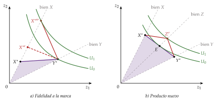
Fuente: elaboración propia a partir de Lancaster (1966).
G. Anexo: la definición del mercado del bien diferenciado
Con productos diferenciados, el mercado no puede definirse de forma muy estricta, solo con sustitutivos perfectos: casi cada empresa sería un monopolio, cuando la mayoría no lo es y, si sube su precio, sus clientes se van a unos pocos bienes alternativos. Tampoco de forma muy amplia: todo bien es en algún grado sustitutivo de otro, pero el mercado no puede ser toda la economía; tiene que permitir el equilibrio parcial y describir las interacciones principales entre las empresas (Tirole, 1988, 12-13).
La definición adecuada depende del uso. En el caso del carbón (Tirole, 1988, 12-13):
para la política energética, el mercado es el de la energía (carbón, gas, petróleo, nuclear);
para los contratos a largo plazo entre minas y eléctricas, el regional;
para una fusión entre 2 proveedores, uno mucho más estrecho, por los altos costes de transporte.
Criterios propuestos, útiles pero imperfectos:
la cadena de sustitutivos de Robinson (1933): partir de un bien, buscar sus sustitutivos y los sustitutivos de estos hasta encontrar una brecha. Trata los bienes de forma demasiado simétrica (el bien 1 y el 3 pueden competir con el 2 y poco entre sí),39 ignora la competencia potencial y no define qué es una brecha;
la correlación de los precios: los bienes del mismo mercado sufren perturbaciones parecidas y sus precios se mueven juntos. Es, como mucho, una condición necesaria, no suficiente;40
el test del monopolista hipotético (SSNIP), el de la práctica de la competencia: un conjunto de productos forma un mercado si un monopolista hipotético de todos ellos podría subir el precio de forma rentable entre un 5 y un 10 % de manera duradera [ver tema 3.A.20].
En el cuerpo del tema se ha supuesto que el mercado está bien definido: o un bien homogéneo, o un grupo de bienes diferenciados que son sustitutivos razonablemente buenos entre sí y tienen una interacción limitada con el resto de la economía.
H. Anexo: literatura empírica y enfoque de elección discreta
Estimar la demanda de bienes diferenciados. Estimar directamente la demanda de \(n\) variedades, con todas sus elasticidades cruzadas, exige del orden de \(n^2\) parámetros, demasiados si \(n\) es grande. El enfoque de características lo reduce al orden de \(n\) por el número de características: Berry, Levinsohn y Pakes (1995) estiman así la demanda de automóviles en Estados Unidos (hay un resumen en Cabral (2000, 211-12)), y Nevo (2001) mide el poder de mercado en los cereales de desayuno: los márgenes se explican sobre todo por la diferenciación y por las varias marcas de cada fabricante, más que por la colusión.
Entrada con elección del producto: Seim (2006) estima un modelo estático de entrada en el que las empresas eligen también su posición, aplicado a los videoclubes, un mercado de demanda muy localizada; encuentra que diferenciarse da rendimientos significativos y que los mercados con más margen para diferenciarse atraen más entrada.
El enfoque de elección discreta: cada consumidor tiene un gusto propio por cada variedad (su «valor de ajuste»), que la empresa no observa pero cuya distribución conoce; agregando las elecciones individuales se obtiene la demanda de cada variedad (Anderson, Palma y Thisse, 1992):
con gustos independientes e idénticamente distribuidos (logit), la sustitución es simétrica y la competencia, global, como en la CES;
el logit anidado permite una sustitución más cercana dentro de cada grupo;
y el probit general, patrones más ricos a través de la matriz de varianzas y covarianzas de los gustos.
Los 2 enfoques del tema no son incompatibles: la demanda CES de un consumidor representativo puede obtenerse agregando las elecciones de consumidores heterogéneos que eligen con un logit y compran cantidades divisibles (Anderson, Palma y Thisse, 1992). No es que la CES sea una variante del logit, sino que el logit puede darle fundamento.
I. Anexo: colusión con producto diferenciado
La diferenciación afecta a la sostenibilidad de la colusión [ver tema 3.A.19] por 2 vías (Ivaldi et al., 2003):
asimetría: la empresa con mejor producto, en sentido vertical, está como una con costes menores: gana más si se desvía del acuerdo, porque puede fijar un precio neto distinto, ajustado por la diferencia de calidad, y pierde menos que las demás si la castigan. Eso hace más difícil sostener la colusión;
transparencia: la diferenciación hace el mercado menos transparente, y con ello más difícil detectar las desviaciones, ceteris paribus.
Con diferenciación horizontal el efecto es ambiguo: se gana menos desviándose, porque no se capta toda la demanda de la rival, pero el castigo también es menos duro (Ross, 1992).
J. Anexo: el análisis económico de la publicidad
Chamberlin, con los costes de venta, hace el primer intento de integrar la publicidad en la teoría económica (anexo A). La literatura posterior es muy amplia; el resumen más completo es el de Bagwell (2007).
Las 3 visiones de la publicidad (II.5) tienen consecuencias distintas para la diferenciación:
con la visión informativa, la publicidad es la respuesta del mercado a la información imperfecta y a los costes de búsqueda, y puede ser una característica más en la que se diferencian los bienes: la empresa que informa mejor se distingue de sus rivales;
con la visión persuasiva, la publicidad cambia la diferenciación que perciben los consumidores: hace la demanda de la empresa menos elástica y sube los precios; la de las empresas instaladas puede ser una barrera de entrada, más alta cuanto mayores sean las economías de escala en la producción o en la propia publicidad [ver tema 3.A.15];
con la visión complementaria, la publicidad entra en la utilidad junto al bien, y su efecto sobre el bienestar se mide con las preferencias dadas (Becker y Murphy, 1993).
La evidencia empírica sobre estas visiones la resume Bagwell (2007): ninguna se impone con carácter general, y el efecto de la publicidad sobre los precios y la entrada depende del mercado.
K. Anexo: aspectos para el test y preguntas del tribunal
Preguntas tipo test del primer ejercicio: simulador de test.
Chamberlin a largo plazo: \(p=\mathrm{CMe}>\min\mathrm{CMe}>\mathrm{CMg}=\mathrm{IMg}_d\); beneficio nulo; exceso de capacidad.
Dixit-Stiglitz: \(\mathcal{L}=1/\sigma\) y \(p^*=\frac{\sigma}{\sigma-1}\,c\); \(q^*=(\sigma-1)\,\mathrm{CF}/c\) no depende del tamaño del mercado, y \(n^*=\alpha\overline{W}/(\sigma\,\mathrm{CF})\) sí. Más preferencia por la variedad es un \(\sigma\) menor y un margen mayor.
Bertrand y Cournot con producto diferenciado: los precios son complementos estratégicos y las cantidades, sustitutivos estratégicos; \(p^B<p^C\); con producto homogéneo, \(p^B=c\).
Hotelling: con las empresas en los extremos, \(p^*=c+t\) y \(B=t/2\) cada una; con precios fijos, diferenciación mínima (las 2 en el centro), porque solo actúa el efecto demanda; con precios elegidos y costes cuadráticos, diferenciación máxima; óptimo social en \(1/4\) y \(3/4\).
Salop: \(p^*=c+t/n\); \(n^*=\sqrt{t/\mathrm{CF}}\), el doble del óptimo, \(\frac{1}{2}\sqrt{t/\mathrm{CF}}\).
Diferenciación vertical: diferenciación máxima de calidades; finitud: el número de empresas no depende del tamaño del mercado.
Dorfman-Steiner: \(A/(p\,q)=\varepsilon_{q,A}/|\varepsilon_{q,p}|\).
Fechas: Hotelling (1929); Chamberlin y Robinson (1933); Dorfman y Steiner (1954); Lancaster (1966); Spence (1976); Dixit y Stiglitz (1977); Schmalensee (1978); Salop (1979); d’Aspremont, Gabszewicz y Thisse (1979); Gabszewicz y Thisse (1979); Shaked y Sutton (1982 y 1983); Singh y Vives (1984); Mankiw y Whinston (1986).
Preguntas probables del tribunal
¿Por qué en competencia monopolística hay beneficio nulo y, sin embargo, poder de mercado?
¿Por qué hace falta \(\sigma>1\) en Dixit-Stiglitz? ¿Cómo depende el margen de la preferencia por la variedad?
¿Produce el mercado demasiadas variedades o demasiado pocas? ¿Respecto a qué óptimo?
¿Qué pasaría en Cournot con producto diferenciado? ¿Y en Bertrand? ¿Cuál es más competitivo?
¿Por qué hace falta suponer costes de transporte cuadráticos en la ciudad lineal con localización elegida?
¿Por qué, con diferenciación vertical, el número de empresas no crece con el mercado?
¿Qué relación hay entre el índice de Lerner y el gasto en publicidad?
Bibliografía
Es un método muy extendido en las ciencias sociales: sostiene que los fenómenos sociales, su estructura y sus cambios, se explican en principio a partir de los individuos, de sus metas, sus creencias y sus acciones, y ve la evolución de la sociedad como el agregado de las decisiones de los particulares. Es, por tanto, un reduccionismo: explica las entidades grandes a partir de las pequeñas.↩︎
La microeconomía contemporánea considera esta separación estricta entre consumidores y productores una simplificación excesiva (Ekelund y Hébert, 2014, cap. 26): lo muestran las «tecnologías del consumo», como el enfoque de características de Kelvin Lancaster, que este tema usa para justificar el enfoque de direcciones (II.3.1), la economía doméstica de Becker, la producción doméstica de Gronau o la economía de la información de Stigler.↩︎
En realidad no puede afirmarse que existan solo 4 estructuras de mercado: la clasificación facilita la exposición, y cada una tiene su tema [ver tema 3.A.16] [ver tema 3.A.17] [ver tema 3.A.19]. En la práctica pueden mencionarse otras, como las plataformas, que incorporan las economías de red: la utilidad de cada usuario aumenta con el número de usuarios.↩︎
La diferenciación hace más ambiguo el concepto de industria o de mercado, que puede definirse con 2 criterios: el de oferta, que agrupa las empresas que usan tecnologías parecidas o producen el mismo bien (es el de la Clasificación Nacional de Actividades Económicas, hoy la CNAE-2025 (Boletín Oficial del Estado, 2025)), y el de demanda, que agrupa las empresas cuyos productos los consumidores consideran razonablemente sustitutivos. Los problemas de definir el mercado de un bien diferenciado están en el anexo G [ver tema 3.A.20].↩︎
En la práctica conviven: quien compra un coche elige primero el segmento de precio, un problema de diferenciación vertical, y después, dentro de él, el modelo que más le gusta, un problema de diferenciación horizontal.↩︎
Si las economías de escala son internas a la empresa, la mayor acabaría quedándose con el mercado y la competencia no se sostendría; si son externas, rara vez se limitan a una sola industria, como exige el equilibrio parcial. De ahí la propuesta de Sraffa de abandonar la competencia perfecta y estudiar cada empresa con su propio mercado y una demanda decreciente [ver tema 3.A.11].↩︎
En el original: «A model which took account of all the variegation of reality would be of no more use than a map at the scale of one to one».↩︎
Si los consumidores no conocen la calidad antes de comprar, la publicidad puede servir de señal (II.5) [ver tema 3.A.13].↩︎
Con bienes homogéneos, la elasticidad cruzada es infinita a igualdad de precios: quien vende un céntimo más caro lo pierde todo.↩︎
Exige que las preferencias de los consumidores se repartan por igual entre los vendedores y que las diferencias entre los productos no den lugar a diferencias de costes. El propio Chamberlin reconoció su falta de realismo.↩︎
En la versión de Krugman, Obstfeld y Melitz (2018, cap. 8), la empresa \(i\) vende \(q_i=S\left[\frac{1}{n}-b\,(p_i-\bar{p})\right]\), con \(S\) las ventas de la industria, que se toman como dadas, \(\bar{p}\) el precio medio de las demás y \(b>0\) la sensibilidad de su cuota a la diferencia de precios (\(S\) y \(b\) son locales de esta nota). Si cobra lo mismo que las demás, vende \(S/n\): es la demanda \(D\); si mueve su precio sola, se desplaza por una recta de pendiente \(-1/(Sb)\): es la demanda \(d\).↩︎
En el punto de tangencia, la pendiente de la demanda inversa, \(p'(q)=(\mathrm{IMg}-p)/q\), es igual a la del coste medio, \(\mathrm{CMe}'(q)=(\mathrm{CMg}-\mathrm{CMe})/q\); como además \(p=\mathrm{CMe}\), se cumple \(\mathrm{IMg}=\mathrm{CMg}\).↩︎
En la competencia perfecta el número de empresas se escribe \(J\) [ver tema 3.A.16]; aquí, como en el comercio internacional, cada empresa vende una variedad y se cuentan con \(n\), el número de variedades.↩︎
Dixit y Stiglitz (1977) estudian varios casos combinando 3 restricciones: simetría del agregador, forma CES del agregador y forma Cobb-Douglas (o, en general, homotética) de \(U\). Imponer las 3 a la vez es lo que Neary (2004) llama «Dixit-Stiglitz lite», la versión que usa casi toda la literatura posterior.↩︎
Con la Cobb-Douglas, el gasto en el grupo es la proporción fija \(\alpha\) de la renta: hay efecto renta, con elasticidad renta unitaria. Otra opción habitual es la utilidad cuasilineal, \(U=x_0+\alpha\ln y\): el gasto en el grupo es entonces la constante \(\alpha\) (si \(\overline{W}>\alpha\)), sin efecto renta, como en el equilibrio parcial [ver tema 3.A.16], y todos los resultados que siguen se mantienen sustituyendo \(\alpha\overline{W}\) por \(\alpha\). La utilidad cuasilineal es también la que da la demanda lineal de la competencia en precios y en cantidades con producto diferenciado (II.2).↩︎
La convexidad de las curvas de indiferencia solo exige \(\rho<1\), es decir, \(\sigma>0\) [ver tema 3.A.8]; con \(\rho<0\) (\(\sigma<1\)) las variedades serían complementarias y una que no se consumiera anularía la utilidad. Es \(\sigma>1\) (\(0<\rho<1\)) lo que hace que las variedades sean sustitutivos imperfectos y la demanda de cada una, elástica.↩︎
Exactamente, \(\varepsilon_{x_i,p_i}=-\sigma+(\sigma-1)\,s_i\), con \(s_i=(p_i/P)^{1-\sigma}\) la parte del gasto del grupo que va a la variedad \(i\); con \(n\) variedades simétricas, \(s_i=1/n\to0\). Es la elasticidad de la demanda percibida \(d\) de Chamberlin; la efectiva \(D\), con todos los precios iguales, es \(x=\alpha\overline{W}/(p\,n)\), de elasticidad unitaria respecto al precio común. Las 2 demandas de Chamberlin salen aquí de las preferencias.↩︎
Al bajar la demanda de cada variedad, la cantidad de equilibrio baja y, por las economías de escala, el coste medio sube a lo largo de su curva (que no se desplaza), mientras el precio se mantiene en \(p^*=\mu c\): se desplazan la demanda y el ingreso marginal, pero no el coste medio. En la tangencia, como en Chamberlin, \(\mathrm{IMg}=\mathrm{CMg}\).↩︎
Se le ha criticado también que no sigue del todo el espíritu de Chamberlin. En Chamberlin, el beneficio nulo llega con un aumento ilimitado del número de empresas, y con infinitas empresas es razonable suponer elasticidades cruzadas despreciables y que ninguna espera reacción de las demás. Pero si el equilibrio de Dixit-Stiglitz tiene un número finito de empresas, esos supuestos son más arbitrarios; y si se supone un número ilimitado, reaparece un viejo problema: infinitas variedades implican, en el límite, una sustituibilidad infinita, que es la competencia perfecta y no la monopolística. Hace falta algo que limite la sustituibilidad para que la demanda de cada variedad siga teniendo pendiente negativa aunque el número de productos crezca sin límite.↩︎
El poder de mercado del oligopolista no es total: elige el precio o la cantidad, no los 2, sujeto a la demanda y a lo que hagan las demás.↩︎
\(\alpha\), \(\beta\) y \(\gamma\) son parámetros locales de este apartado; \(\alpha\) no tiene nada que ver con la parte del gasto de Dixit-Stiglitz. Con \(\gamma<0\) los bienes serían complementarios, caso que Singh y Vives (1984) también estudian.↩︎
Con el enfoque de direcciones se llega al mismo gráfico. En la ciudad lineal de Hotelling, con las empresas en los extremos y un coste de transporte \(t\) (II.3.2), las funciones de reacción en precios son \(R_i(p_j)=(p_j+c+t)/2\), crecientes, y el equilibrio es \(p_1^*=p_2^*=c+t\) (gráfico 8): el margen sobre el coste marginal es \(t\), y desaparece si \(t\to0\), con lo que vuelve la paradoja de Bertrand.
↩︎\(p^C-c>p^B-c\iff\beta(2\beta-\gamma)>(\beta-\gamma)(2\beta+\gamma)\iff 0>-\gamma^2\), que se cumple siempre que \(\gamma\neq0\).↩︎
Por ejemplo, la cantidad de azúcar de un refresco: unos prefieren la versión normal, otros la que no lleva azúcar. Los consumidores no se ponen de acuerdo en cuál es mejor: es diferenciación horizontal.↩︎
Se suele contar con el ejemplo de 2 puestos de helados que deciden dónde ponerse en una playa.↩︎
Una crítica al modelo es que la diferenciación es unidimensional. Su aplicación a la política, el modelo de Downs y Hotelling (Downs, 1957), supone que los partidos compiten en un segmento de izquierda a derecha, pero puede haber varios ejes: en lo económico, más liberal o más intervencionista; en lo social, más progresista o más conservador [ver tema 3.A.24] [ver tema 4.B.2].↩︎
\(t\) no es aquí un tipo impositivo, como en otros temas: en este no hay impuestos. Con la localización dada en los extremos, un coste lineal, \(t\,d\), da los mismos resultados; el cuadrático hace falta cuando las empresas eligen dónde situarse (II.3.3) y pueden estar en el interior del segmento.↩︎
La paradoja de Bertrand descansa en 5 supuestos: costes marginales iguales, producto homogéneo, sin restricciones de capacidad, un contexto estático y sin cooperación entre las empresas. Con producto homogéneo, si una empresa cobrara menos se quedaría con toda la demanda; la otra bajaría también el precio, y así hasta el coste marginal, donde ninguna quiere bajarlo (tendría pérdidas) ni subirlo (perdería todos sus clientes) [ver tema 3.A.19]. Este modelo levanta el segundo.↩︎
Con costes lineales, la demanda de cada empresa es discontinua: si una baja el precio lo bastante, se queda de golpe con todos los clientes de la otra, también los de su mercado cautivo, los que viven más allá de ella, y deja de haber consumidor indiferente; el beneficio deja de ser cuasicóncavo y puede no haber equilibrio en precios (d’Aspremont, Gabszewicz y Thisse, 1979). Con costes cuadráticos, la demanda es continua. El razonamiento, con su gráfico, está en el anexo D (gráfico 13).↩︎
Es una pregunta habitual de test: con precios fijos, las 2 empresas se sitúan en el centro, porque solo actúa el efecto demanda (o de cuota de mercado), y no el efecto estratégico, que es el que las empuja a diferenciarse.↩︎
Se ve en los candidatos que vienen de una ideología concreta y, para atraer al mayor número de electores, se mueven hacia posiciones moderadas.↩︎
Salop usa el círculo porque en la ciudad lineal de Hotelling los extremos crean efectos frontera (boundary effects): las empresas de los extremos solo tienen una vecina. La circunferencia no tiene fronteras.↩︎
Salop no modeliza la elección de la localización. Economides (1989) muestra que, si las empresas la eligen después de entrar y antes de competir en precios, con costes de transporte cuadráticos el reparto equidistante es un equilibrio.↩︎
Con \(n\) empresas equidistantes, cada una sirve un arco de longitud \(1/n\) y sus clientes están, a cada lado, a una distancia de hasta \(1/(2n)\); el coste de transporte total es \(n\cdot2\int_0^{1/(2n)}t\,x\,dx=t/(4n)\).↩︎
\(\theta\) y \(s\) son locales de este apartado: \(\theta\) no es aquí la aversión al riesgo, y los subíndices A y B (en redonda) indican calidad alta y baja, como en la selección adversa [ver tema 3.A.13]; \(B_{\mathrm{A}}\) es el beneficio de la empresa de calidad alta.↩︎
Con poca heterogeneidad, las 2 calidades compiten casi como un bien homogéneo: la de calidad alta puede bajar su precio lo justo para quitarle todos los clientes a la de calidad baja.↩︎
\(A\) y la elasticidad \(\varepsilon_{q,A}\equiv\frac{\partial q}{\partial A}\frac{A}{q}\) son locales de este apartado.↩︎
La secuencia exacta (cuánto se pasa la entrada y cuánto se corrige con la salida) depende de los supuestos sobre la velocidad de cada ajuste; lo que importa es adónde lleva el proceso.↩︎
Un coche barato y uno de gran lujo están en la misma cadena de sustitutivos, pero ¿están en el mismo mercado?↩︎
2 distribuidoras eléctricas de países distintos no compiten entre sí, aunque sus precios estén correlacionados porque lo están los de sus combustibles.↩︎